第１図版
［＃改ページ］
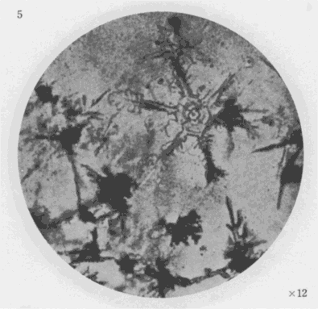
第２図版
［＃改ページ］
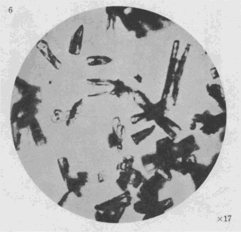
第３図版
［＃改ページ］
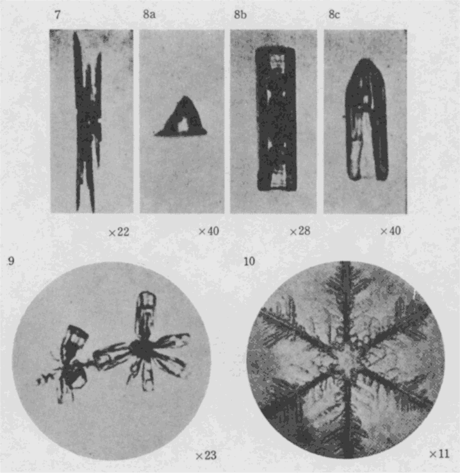
第４図版
［＃改ページ］
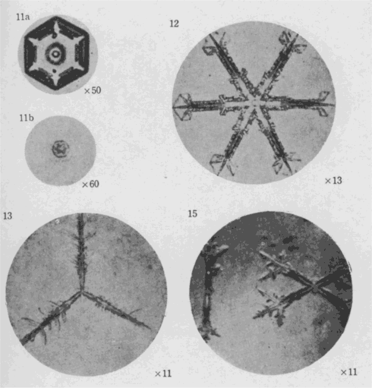
第５図版
［＃改ページ］
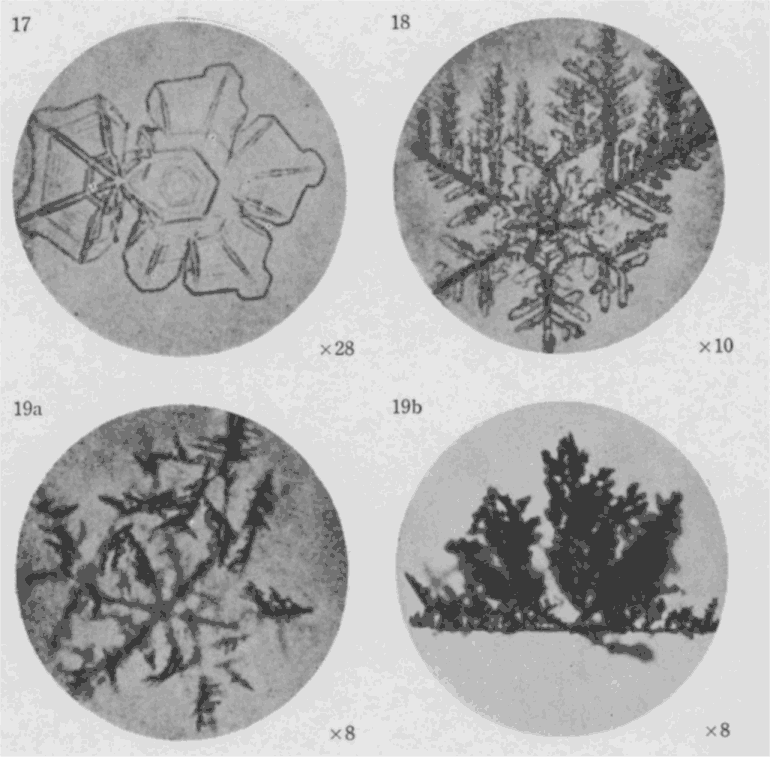
第６図版
［＃改ページ］

第７図版
［＃改ページ］
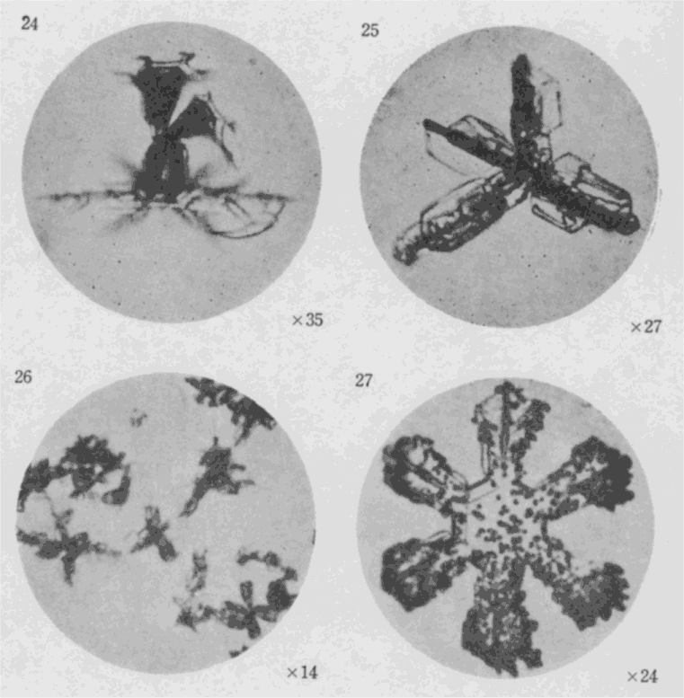
第８図版
［＃改ページ］

第９図版
［＃改ページ］
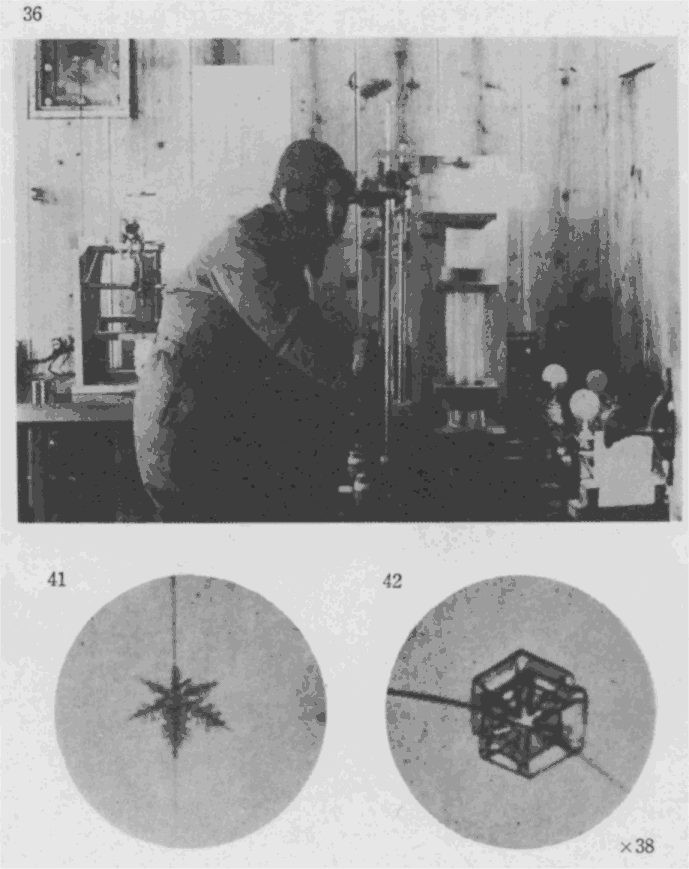
第10図版
［＃改ページ］
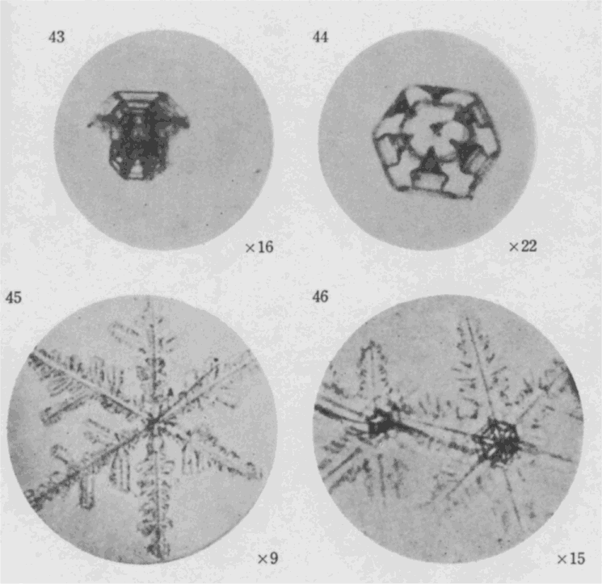
第11図版
［＃改ページ］
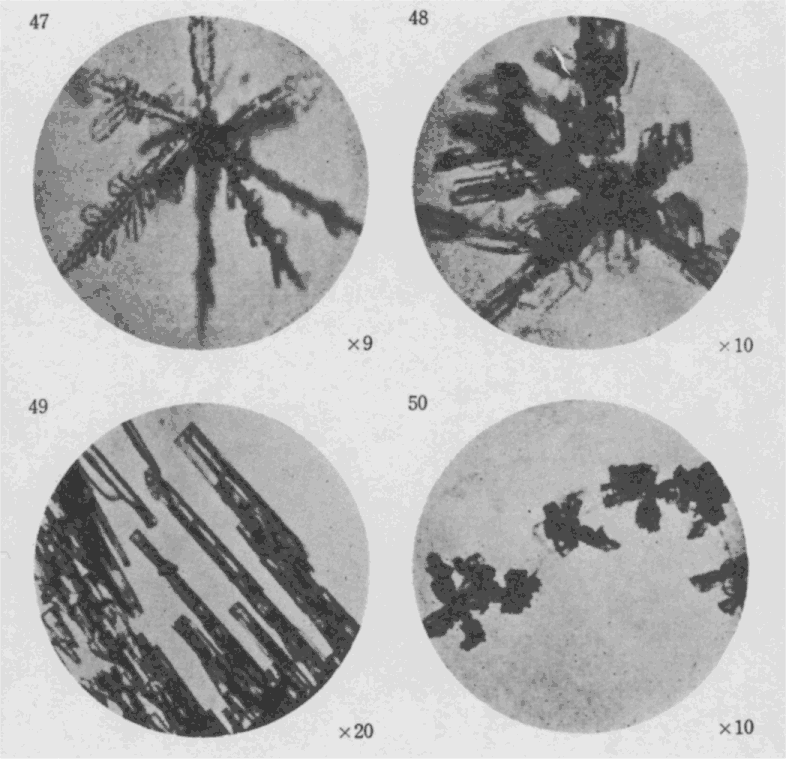
第12図版
［＃改ページ］
この本は雪の結晶について私が北海道で行った研究の経過及びその結果をなるべく分りやすく書いたものである。
北海道における研究の外に、この数年来、私は
この本を書く前に実は、色々な雑誌や新聞に雪の話を時々書いたので、それらの記事の一部が重複してこの本の中へ出て来ていることがある点を御断りする。本当の所はこの本を作るに当って、小林勇氏が大変
昭和十三年十二月一部改訂に際して
著者
［＃改丁］千七百七十年正月七日越後の国塩沢に生れた鈴木
「
というようなことが
雪の降らぬ地に生活している者に向って、雪の災害を説き知らせることは至難のことであろう。
我国においても
雪の人間に与える損害は色々数えることが出来よう。そのうち計算にのらぬものは今
我国の一年間の雪の損害は、鉄道の損害を除いてもなお大雪の年には一億二、三千万円に上っており、比較的雪の少い年でもなお六、七千万円の巨額に達している。これは雪から蒙る直接の損害であって、不利益的損害を除いた数字なのである。不利益的損害というのは数字によって現すことの出来ないもののことであって、例えば東北地方の幼児の死亡率が、世界一の未開民族として知られているタスマニヤ島の蛮族に較べて、殆ど同程度であるというようなことである。この原因を追及したならば、「雪のために」蒙っている影響が、意外に主要な役割を占めているというような結果が出て来るのではなかろうかと思われる。
我国で大雪に苦しめられるのは、誰でも知っているように裏日本であって、新潟、富山、石川、山形、長野などを初めとして、北海道、青森、秋田、岩手などに及んでいる。このように何故裏日本に雪が多く降るかということは、今日もはや人々の常識となっているところであるが、一口にこれを説明すれば、冬期北半球では西北の風が吹く。特にこの傾向は上層では強いのであって、随って、シベリヤから冷い風が日本へ向って吹いて来るのである。シベリヤと日本との間には、日本海があるので、この風はそこの水蒸気を運び、それが日本の中央を縦走する山脈にあたって、そのうちの水蒸気を雪にして落してゆくのである。
この時期は大体一月から二月にかけてであって、換言すると、冬期の季節風の最も旺盛な時期に、裏日本に大雪が降るのである。雪が降り出し、地上に
これは私が今年（昭和十三年）越後の一農村で

屋根の雪を下ろすのにこのような費用を要するということは、大雪の降る地方の様子を知らぬ人には想像し難いことであろう。
この話は現代のことであるが、昔はどうであったかということも、考えて見る必要がある。その一例として『北越雪譜』から雪下ろしについて引用して見ることにしよう。
「雪を払ふは落花をはらふに
恐らくかかる状態が何百年の昔から今日に至るまで続けられているのであろう。そして今日東北の窮乏甚しき地方において、「子供の生命には代えられぬ」という言葉となって現れ、その貧しい財政の中から多額の雪下ろしの費用が支出されているのである。
雪を屋根から下ろす状態は、牧之
屋根の雪は前述の如く、一々屋根より高くなったところへ運び上げるのであるから、第一回の雪下ろしに百円の費用を要したとするならば、第二回はもっと多く、第三回は第二回よりも更に多くなるのは当然である。かくて「人命に代え難く」と諦めて、貧しい財政の中から支出された前記の八百円は、丁度第三回目の雪下ろしの時のことであった。
さればといって
稲
の古代の娘のように、今日の農村の娘だちには可愛がってくれる若い殿子もいないのである。」と述べている。
かくの如く農民の労力から得られる賃銀は甚しく少いのであるが、その窮乏の村民から集めた金で村の財政をまかなう村役場の役人が、小学校の雪下ろしに多額の金を支出することを嘆くのは、実に当然のことと言わねばならない。何百年の昔、否東北に人間の住み始めてからこの方、かかる嘆きが年毎に繰返されていることを人々は銘記しなければならない。
いうまでもなく、雪国の人々は、その環境に適応した生活様式を永い間に整えている。しかしそれらは何ら科学的研究を基礎としていない。ただ経験によってあみ出された対策であるから、進歩は遅く、しかも自然の猛威に対しては全く消極的な防禦に止まらざるを得ないのである。
「積雪地方農村経済調査所」においては、この屋根の雪下ろしということについても研究を行っている。ここにその一例を挙げて見れば、読者はその思いつきの簡単なことに驚かれるであろう。昭和十二年頃から、屋根の雪下ろしについて一つの試みをした。それは、屋根から
また越後のある村で永く校長をしていた人が、雪下ろしのいらぬ屋根を考案した。それは勾配の急なトタン
街の中の雪を片づけるために、流雪溝を作っているところもあるが、これも見るべき成績を挙げている。流雪溝というのは、街の大通の両側に幅三尺位の溝を作り、冬は必要でない灌漑用の水を流し入れてこの中へ雪を投込む。流れている河水は、内地にあっては
屋根の雪下ろしの次に雪の被害を被る著しいものとしては、果樹の枝折れを挙げることが出来る。その一例をとれば、山形県地方の名産
かくの如く樹木を痛める雪は湿り気のある粘着力の多い雪ということは分っているのであるが、今直ちに、これを春先に必ず降るとか、
次には雪中の交通運搬に関する被害という事実がある。雪中の交通といえば、今は鉄道にはラッセル車もあり、ロータリ車もあり、人間の交通のためにはスキーもあり、山の中から木材を運ぶためには
鉄道の雪による損害というものは、一年にどの位あるか。この数字は、前記一億二、三千万円という中からは除いてあることを記した。我々は冬になると新聞に、「裏日本一帯の吹雪、各列車
鉄道の被害といえば、除雪の外に
凍上の起っている場所を掘って見ると、地下数寸または数尺の所に厚い透明な氷の板が出来ているそうである。普段そういう水の層があるわけはないから、その氷の層は凍結につれて氷が土から分離して
わが国のこの種の研究が長足の進歩をしないのは、研究費の不足もさることながら、その当事者が頻々として転任し、一つのことに十年数十年あるいは一生をかけてとりくみ、研究を続けようとしない点にあるのではないかと考えられる。どのような研究や仕事も一年や二年で完成されるはずがない。まして我国に取って重大な問題であり、かつ案外困難である雪の研究などが、単なる腰かけ仕事に出来るはずもないであろう。
雪は人間の生活に害を与えるばかりではない。これを利用すればまた
北海道のような所で、特に奥地にある木は冬でなくては運び出せない。雪が十分深く積ると、夏の間は足も入れられないような山奥までも馬橇が通うようになって、
さて私は昨年の冬から、丁度良い林学関係の協力者を得たので、たま引の物理的研究という仕事を始めたのである。物理的研究といっても別に難しいことをするのではなくて、雪橇の抵抗を測って雪質や荷重などとの関係を見るというだけなのである。まあその実験の味噌とでもいうべき点は、本当の馬とバチバチとを使って、本当の材木を積んで、たま引道へ行って測定をするということででもあろう。昨年の実験は全部協力者がやってくれたので、まだほんの予備的の実験ではあるが、かなり面白い結果が出て来たようである。実験機械というのは、ゼンマイ
もっともこれはほんの予備的の実験であって、実際は馬の牽く力は一歩一歩毎に違うのである。それに或る雪質の場合には、雪が橇に
抵抗の測定が完全に出来るようになれば、色々の型のバチバチの性能の比較、随ってその改良、雪道の作り方の影響、冬期間の各時期における抵抗の標準、地方による差など、調べる事はいくらでも出て来る。そしてそれらの色々の要素の中から搬出費用の極小になる条件を求めれば、それでたま引の物理的研究として先ず通用するのである。一々その測定資料を挙げて、これらの実験をすっかり書いたら、恐らく大部な研究となることであろう。外国にたま引があるかどうかは知らないが、
以上思いつくままに雪害について、あるいは雪の利用について述べて見たが、雪害の種類も雪の利用もまだまだ沢山あることはここに数え立てるまでもない。
私のこの本で述べようとするのは、この地上に積った即ち積雪についてではなく、主として地上へ降って来るまでの雪の状態についてであるから、これ以上、雪害及び雪の利用の問題については述べない。これらについては、いずれ私以外の誰か専門家が説いてくれるであろう。私は日本において雪の研究をもっと真剣にしなければならぬということを繰返すに止める。それを説明するために、われわれの一番目につきやすいかつ気のつきやすい雪の話をここへ持って来たまでである。
雪は人間の生活をおびやかすばかりではない。年毎に激増してゆくスキーを楽しむ人、冬山へ登る人、更に幾度か犠牲を払うことにも屈せず、ヒマラヤに挑戦している西欧の登山家たち、このいずれもの人々がいわば雪と闘い、雪を楽しみ、雪の魅力に引ずられているのであるが、雪の研究を根本的に進めようとする人間の努力の方はこれらにくらべて遥かに微弱であることは争えない。毎年何百万の人間が積雪に苦しめられて憂鬱な生活をしている。雪のために毎年一億万円を超える損害を受けている。こういう事実に対して少数の人々は何とかしなければいけないということを真剣に考えているのである。
しかし一方では、毎年冬になると何十万という人々が、スキーを楽しむために雪原へ雪の山へ出かけてゆく。これらの人々が雪に親しみ、健康と剛健な気風とを養うことは勿論大いに賛成すべきことではあるが、このように雪に親しむ気持を今一歩進めて、雪の性質なり、雪の降る状態なりに注意し、そして雪から蒙る損害をいくらかでも少くしようということに心を向け、また同時に雪を楽しむようにしたら、どんなに良かろうかという気もする。雪の性質が本当に研究し尽された時、雪は現在のように恐ろしいものとして、われわれに迫らなくなるであろう。これは決して夢のような話ではない。人間はもっともっと困難な多くの自然現象とたたかい、それを研究して、征服しつつあるのに、雪についてまだ多くの研究がされないのは何故であろうか。少数の学者の研究が
［＃改ページ］
雪の結晶は誰が最初にその姿を正しく認識したであろうか。そして、その後どのような歴史をもって今日に及んでいるか。今その大略をここに述べて見よう。そうしてこの歴史を調べることによっても今更に感ずるのは、
雪の結晶を初めて認識した人はアルベルタス・マグヌスで、一二五〇年代のことである。これより以前に雪に関する記述は全く残っていない。古代文化の繁栄の中心は多く地中海方面であって、この地方に雪の降ることは甚だ稀であったから、随って雪の研究は北欧人により、あるいは北方に旅行をした人によって漸次為されたものと考えられる。
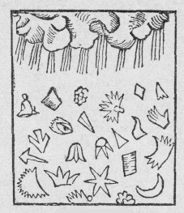
第１図
一五五〇年代ウプサラの大僧正オラウス・マグヌスはその著 Historia de Gentibus septentrionalibus の中の一章に雪のことを記し、第１図の如き雪の結晶を描写した。これは今から見ればまことに怪しげなものといわねばならぬが、ともかくこれが雪華図として世界最初のものである。彼はこのほか
マグヌスは結晶に種々の形のあることを発見したが、それが一様に六方晶系に属する結晶であるということには気が付かなかった。その点を初めて指摘したのは有名なケプレルだということになっている。その後一六三五年アムステルダムにおいて、デカルトが雪の結晶の観察をしてその絵を発表したのを初として、十七世紀の前半には多くの学者が雪の結晶に興味を持ってその研究をした。
この頃までの雪華の観察は、肉眼でなされたかあるいは簡単な虫眼鏡でされたのであるが、十七世紀後半において、顕微鏡の発明が全ての学問的研究に一大飛躍を
一六七五年にはドイツの旅行家フリードリヒ・マルテンスが、スピッツベルゲンからグリーンランドの方面に航海した見聞記を刊行している。この中で彼は極地方面での雪の観察を記載しているが、彼の功績は、結晶形と天候との関係についての観測結果に論及していることである。
一六八一年にはリヴォルノの僧侶で数学者のドナト・ロセッティが、その著 La figura della neve において、六十箇の雪華を描いてこれらの結晶を五種類に分類している。これが最初の分類であって、その分類は今日より見れば甚だ幼稚ではあるが、とにかく最初に雪の結晶を分類したという点で、彼の名は雪の研究史上に逸することは出来ない。
十八世紀においては雪の研究では特に記すべきほどのこともない。
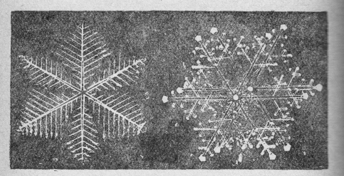
第２図
一八二〇年イギリスの捕鯨業者ウィリアム・スコレスビーは、北海における捕鯨の歴史とその状態とを記した著作を出したが、その中に彼は九六箇の雪華図を収め、かつこれを五種に分類した。彼はその分類中にプリズム型、ピラミッド型及び板状と柱状結晶との結合したもの即ち後述の鼓型をも含め、従来見のがされていた新しい種類についてその構造を明かにした。彼の説は物理学者、気象学者の注目を惹き、その著書は極地方に関する一般的記事の古典として
十九世紀の末葉から顕微鏡写真の方法が考案され漸次進歩してからは、雪華の研究も長足の進歩をとげたのである。即ち一八九四年ベルリンでノイハウス博士及びシグソンが撮影した写真について、ヘルマン教授が精しく研究してドイツ気象学界に発表しているが、特にシグソンの写真は、斜めの照明法を用いて雪の結晶の表面の
以上は雪華研究の歴史を大略述べたのであるが、かくて六世紀に
ベントレーはアメリカのヴェルモント州に生れ、その殆ど全生涯をジェリコにおける雪の結晶の観測に費した。彼は正規の教育を受けた人でなく、学者としての彼の地位は極めて低いものであったが、彼は幼少の頃その母から与えられた顕微鏡によって、雪華を偶然にのぞいて、その美しさに驚異の念をもったことに出発して、遂にその一生は雪華の写真を撮るために費されたのである。彼は毎年冬になると、雪華の写真を撮り、それが一九〇七年には千三百種になり、一九二三年には約四千種、そして晩年には遂に六千種に及ぶ写真を撮ったのである。このうち約三千枚を一冊の書物に
この書物は、かつて類例のない雪華の写真集であること、非常に多くの写真を集め得たこと、またその写真が美しいことなどで非常に有名になったものである。従来日本で雪の結晶の写真がしばしば引用されていたのは、多くこの書物中の写真から転載されたものであった。もっとも日本に限らず、世界中の大抵の気象学の本には彼の写真が転載されているといっても良い位である。
しかしベントレーは前記の如く余り科学的素養をもたず、最初はただ自分の楽しみとして、後には新しい写真の数を増すこと、そのまた美しい写真や幻燈板を売ることを仕事としていた程度であるから、倍率や降った時期の記載が全然ないのが惜しまれている。写真は、
しかしベントレーの写真集は、雪の結晶について多くの人々の関心と興味とを喚起した。この点においてウイルソン・ベントレーなるアメリカの一老人は偉大なる功績を遺したと言うことも出来る。厳密にいってそれは科学的研究の産物とはいえないかも知れないが、その一生を通じて自然に対する純真な興味を失わず、うまずたゆまず成し遂げた彼の事業に対しては、われわれは尊敬を払わなければならないであろう。
ベントレーの写真集は前述のように立派なものではあるが、凡て綺麗でかつ規則正しい平板状の対称形のもののみを選んで撮ったために、一般に雪の結晶というものが、ベントレーの写真のようなものと思い込ませたという点は注意して置く必要がある。アメリカにおける彼の観測にも、後述のような不規則な形のものや、立体的に発達したものや、あるいは無定形に近いものがあったのであろうが、彼はそれらの顕微鏡写真は殆ど撮らなかったようである。前述のように、彼の目的が美しい結晶の写真の
彼がもし、自然を忠実に観察するという科学者の態度をもって、その一生の仕事を続けたならば、彼の写真の如く平面的で、かつ六次の対称をしているような結晶以外に、沢山の複雑な形の雪が存在する事を一般の人に教えたであろう。事実は後に詳しく述べるように、立体的の構造のもの、あるいは不規則な形のもの、あるいは無定形に近いようなもの、即ち見た眼には汚い形のものが非常に多いのである。しかしベントレーの如き傾向がヨーロッパの気象学者の雪の結晶の写真集にも度々見られるのは、人間に共通な或る心理の現れとも考えられぬことはない。それには顕微鏡写真が立体的のものを撮るのに適しなくて、またそのようなものを撮影しても出来上った写真が綺麗でないということが、その種の結晶が除外され勝ちとなった一つの理由かも知れない。この点で顕微鏡写真の発達はかえって、一時科学的な雪の結晶の研究を
以上私共は欧米の雪華研究の歴史のあらましを見て来た。しからば世界有数の雪国たるわが日本には雪華の研究家が存在したであろうか。
最初に挙げたように、バチバチの発明者とか、流雪溝の考案者とか、先祖代々雪の中に生活していた経験から、必要上いろいろのことを考案した無名の科学者たちは数多くあろう。しかし雪華の研究をした人としては唯一人、今より百余年前即ち西暦一八三二年に『雪華図説』なる一書を著した、
ドイトシツラ 土井利位（二四四九―二五〇八）下総古河藩主、土井利徳 の男、利厚 の養子となる。主膳正 、織部正 、大炊頭、従四位下に叙任され、寺社奉行、大阪城代、京都所司代を経て老中首座となる。大阪城代在任中、天保八年大塩平八郎の騒擾事件があったが、善処よく平定せしめた。嘉永元年歿。年六十。
彼の遺した『雪華図説』一巻は、一八二〇年代にスコレスビーあるいはグレイシャーの如き世界的雪華研究者として歴史上に不朽の名を遺した人々の仕事と較べても余り彼が天保三年に著した『雪華図説』は僅かに十七枚の小冊子に過ぎないが、この中には八十六箇の雪華を描写してある。そのうち観察の年時を記載してないものが三十八箇、文政十一年（一八二八年）に二箇、同十三年（一八三〇年）に十箇、天保三年一月に五箇、同年十二月に三十一箇を観察して、これを写しとったのである。その中の数例は第３図にあげる如くで、今子細にそれを見るに、前述欧米の研究者たちの観察に比しても決して
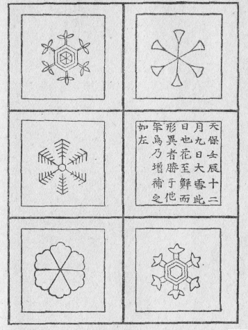
第３図『雪華図説』図版第十面
本図は加納一郎氏所蔵原本より複写したもので，貴重な原本を貸与された同氏の厚志を謝す．なお文久二年大槻磐渓の重刻本もただ一箇順序のちがったものがあるが，図は原本と同じものである．
本図は加納一郎氏所蔵原本より複写したもので，貴重な原本を貸与された同氏の厚志を謝す．なお文久二年大槻磐渓の重刻本もただ一箇順序のちがったものがあるが，図は原本と同じものである．
第一 空気ヲ清フシ汚濁ヲ駆 ル
第二 已ニ気ヲ清フスレバ気即チ涼爽粋純ヲ致ス
第三 積雪常ニ山巓 ヲ寒カラシム 故ニ升騰 ノ気凝集シテ水湿ヲ山
ニ生ジ以テ江河ノ源ヲ養フ
第四 冬寒支体僵
ノ病 雪塊ヲ取テ患部ニ擦※ ［＃「てへん＋茶」の「ホ」に代えて「木」、U+643D、51-5］スレバ即チ愈 ユ 又臘雪水甘クシテ大寒 天行時 疫 ヲ解シ一切ノ瘡毒 ヲ療ス ソノ他諸病ニ於テ必 須 ツ所ニシテ医家欠クベカラズ
第五 遍地ニ罨覆 シテ寒ノ土中ニ侵透スルヲ防拒ス 地中頼 テ以テ寒冷ヲ致サズ 却 テ温ヲ得 故ニ草木肥茂シ蟄虫 生ヲ得 又雪上ニ橇 ヲ走ラシ犬鹿ヲ駆使シ重 ヲ引キ遠 ニ致ス 故ニ北陲 雪多 モ害ナク利アリ
第六 其 質ノ軽キ毳 ニ勝 ル 故ニ冬時ノ蔬穀 ノ 脆
脆傷 ラルルヲ防グ
脆第七 窖蔵 ノ氷雪夏月鳥魚諸肉ノ敗餒 ヲ防ギ水漿 ヲ冷ヤシテ収儲 
延 クコトヲ得イハユル氷雪冬時コレヲ蔵シ夏時コレヲ開キ食肉ノ禄 喪祭賓客用ヒザルコト無シコレ亦 輔相調
ノ一事トコレナリ
第八 冬日地中ヨリ発スル蒸気ヲ遏抑 シ冬天以テ暗晦ヲ致サズ 若 冬日ノ地気ヲシテ恣 ニ空 ニ満タシムレバ冬日更ニ昏暗ヲ致スベキナリ
第九 雪中ニ諸物ヲ生育スル酸塩活機ノ気ヲ包含ス 故ニ土地ノ肥沃ヲ醸 ス
第十 雪輝ヨク諸物ヲ照明ス 故ニ北辺ニ於テ冬日ノ暗室ヲ照シ冬夜ニ明 ヲ与フ
第十一 積雪尺ニ盈 レバ遺蝗 ヲ地下ニ駆 ルコト一丈 其春必※※ ［＃「雨かんむり／脉」、U+9721、52-4］［＃「雨かんむり／沐」、U+9702、52-4］ノ小雨アリテ潤沢澆洽 シ以テ天下ノ豊年ヲナス
第十二 学者雪ニヨリテ理学ノ諸支ヲ悟り詞人画工ニ至ルマデ詩賦 ノ工 ヲ添ヘ山川ノ美景ヲ図 セシム
第十三 雪ノ潔瑩 比スベキモノ無ク能 ク汚濁ヲ洗濯シ臭腐ヲ駆除ス 故ニ中華西洋人ノ廉潔物ノ清浄必ズコレヲ之ニ比ス 我邦由伎 ノ名モ亦此義ナリ
第十四 諸山ノ雪漸 ヲ以テ融釈シ常時諸川ニ適宜ノ冷水ヲ送リ曾テ乾涸ヲ致サズ以上人命ノ係ルトコロ最大 夏月ハ冷冬月ハ温 熱ヲ解シ寒ヲ禦 グ天地ノ神工固 ヨリ偶然ニ非ズ 路上ノ積雪我儕 コレヲ 過
過豈 奉戴ノ意ヲ存セザルベケンヤ
以上がその全文である。この中には例えば第四の如く、雪というよりもむしろ氷であろうと思われるような箇所もないではないが、全体を通じては、雪の性質雪の効用を道破したものとして尊敬に値するのである。過しかしともかく今から百余年昔に『雪華図説』の著者の如き人がいたということは日本人のために意を強くするに足る材料であろう。
日本では土井利位の他には雪華を研究した人は殆どないようである。あるいはあったかも知れないが今日伝わっていない。最初に挙げた『北越雪譜』の著者鈴木牧之は、「雪に関する」
我国の人は、すべて自然の災害に対しても何となく静かな気持でこれを受け入れている傾向が強いように思われる。『雪華図説』あるいは『北越雪譜』あるいは『万葉集』、『古今集』、あるいはまた俳諧随筆などに現われる雪は、いずれも陽気な観察あるいは諦観、最も多くはこれを賞玩するような傾向をもっている。勿論このことをば必ずしも日本人の悪癖であるとのみ言い去ることは出来ない。むしろ泣き
「恐いもの地震、雷、火事、
眼に触れるもの、新しい経験をするもの、苦しめられているもの、楽しんでいるもの、これらを美しく詩化し美化して表現することに妙を得ている日本人の性質を私は一概にけなそうというのではない。しかし科学日本のためには、専門学者の努力のみによって研究が押し進められると思って、安心していることは禁物である。
雪華の研究が顕微鏡がなければ出来ないと思う人があれば、それは迷妄である。百余年の昔既に土井利位がなした業績を思えば、雪華の研究などはほんの一つの例に過ぎないが、あらゆる問題について、道具や器械が揃っていなければ科学的研究が出来ないと思うことそれが科学的精神に反する道であると知らなければならない。雪華の研究の如きは極めて特殊な問題であって、誰もがベントレーの如くまた土井利位の如く、それを一々観察して描写しなくてもよい。しかし自分の楽しみのために、雪の降る日一箇の虫眼鏡をもってそれを自分の眼で見ることは無意味なことではない。それによって自然の
次に現在各国の雪の研究はどんな
その主な仕事としては、四年に一度国際的の会議をして、そこで雪の問題を互に連絡して研究しようというのが目的である。この中でも現在の所、英国の部会が最も活溌に研究を開始していて、時々支部会を開いて盛んに討論をしているようである。雪の研究に万国協議会を作るなどというと少し大げさのように考えられるかも知れないが、今日学問的のあらゆる研究において、この世界各国の研究者が互に連絡をとることは最も必要なことなのである。今日世界の情勢が急迫して、各
の国が鎖国的態度を取ろうとしていることは、科学の進歩という点からいえば、寒心に堪えぬ次第である。雪とは一体何であるか。それは簡単にいえば水が氷の結晶になったものであるということが出来る。しかし普通の水が凍ればそれが雪になるかと言えば、決してそうでないことは誰でも知っている通りである。池の水が凍ったものを雪と呼ぶ人はない。雪解の水や滝の流れが凍って棒状になっても、それは
雪は水が氷の結晶となったものなのである。それで結晶とはどんなものであるかということを簡単に述べることとする。結晶について詳しく学ぶことは、非常にむずかしいことであって、その述説は恐らく一冊の本になるであろうが、
いわゆる結晶というのは、原子の規則正しい配列のために、その外観までが定まった形をしているものを指すのであって、結晶といえばすぐに水晶などのことを聯想するのが例となっているであろうが、水晶は外郭まで規則正しい形になっている方の結晶の代表的なものである。しかしそれではあの六方石（水晶）をいろいろの形に磨いて、円い玉とか四角な置物とかいろいろに細工をしたならば結晶ではなくなるかという疑問が起きるかも知れないが、そうではないのである。ちょっと考えると、六角柱の水晶を円い玉に磨いたり、あるいは
しからば雪は何であるか。それは前にも述べたように、「水が氷の結晶となったもの」でこれは純粋の結晶である。雪は空の高い処で出来てそれが漸次成長しながら地上に降りて来るものである。この時上空高く存在している水が凍るのであるが、この空中の水というのは水蒸気のことである。
普通に気体が冷却されたり圧縮されたりすると液体となり、その液体を更に冷却すると固体になる。この逆に固体を熱すれば液体となり、更に液体を熱すれば気体になる。これを水の場合にすれば氷、水、水蒸気と三つの状態の間を変化するのである。日常目撃する現象はこの三つの状態間の変化であるが、この外にも固体から気体あるいはその逆に、途中の液体の状態をとばして変化することもあるのである。即ち水蒸気が非常に気温の低いところで凝縮する場合、水の状態を飛び越して固体、即ち氷になるのである。この固体から直接気体になり、または気体から直接固体になる現象を一般に昇華作用と呼んでいるが、雪はこの昇華作用によって水蒸気が直接に氷になったものである。即ち昇華による固化という現象によって空気中に生じた氷が地上へ降りて来たものがわれわれのいわゆる雪なのである。大気中でも水蒸気が水になり更にそれが凍る現象もあるが、その場合は凍雨となるのであって雪にはならない。
一般に水蒸気の凝縮によって大気中から降下するものには雨、雪、
これらの各種の降下物の成因は、空気中の水蒸気の濃度、温度、気流の問題などいろいろの事柄によって支配されるもので、此処ではそれらの詳しい点にはふれない。とにかく温い水蒸気が自然対流で上層へ昇って行き、かつ風によって異る地点に運ばれて行って、気温の十分に低いところで昇華作用によって固化した場合に雪が出来る。これが最も簡単な雪の成因の説明である。
さて、水蒸気が凝縮して雪になるには
氷晶の核になるものが塵や塩の微粒子やイオンなどであるとすると、これらのものがどのような状態で大気中に存在するかを説明する必要がある。先ずここでいう上層の空気中に
即ち塵といっても、普通われわれが塵と呼んでいるものと分子との中間位の大きさの固体と思えばいいであろう。固体の一番小さいものといっても、例えば針の先とかほこりの粒子とかいう程度の即ち高倍率の顕微鏡で見える位のものは、分子の数からいえば何億兆という莫大な数字を以て現わさねばならないものである。しかし大気中には特に上層にはそれら地上の塵埃よりも
大気中には、このような細塵が、如何なる場所、如何なる時にも充満している。到る処にそんなに塵が一杯にあっては、われわれの生活に差支えがありはしないかと考えられるかも知れないが、そんなことはないようである。先にも述べたように、それは非常に小さいもので、恐らく、われわれが一口に空気といっているものは、この細塵を沢山含んだ空気のことなのである。
この細塵は太陽の光との合奏によってわれわれに青空を与えている。もしも空気中にこの種の細塵がなかったなら、われわれは青い空を見ることが出来ないのである。
空が青いということは、空気が青いのではなく、空気はもとより無色透明のものである。空から来る光は、日光の中の青い光が空気の分子や空気中に浮んでいるこの種の細塵に散乱されて、青い光となって人間の眼に入るのである。もともと日光の中には赤も黄も緑も即ち虹の七色があって、これらの色は光の波長のちがいから生じているのである。即ち色々の波長の光の集りである。日光が空気の分子や細塵に当って散乱される時に、その波長がこの空気の分子や細塵よりも更に小さい光だけがよく散乱されるのであって、波長の長いものは、これらの微小固体があっても、それでは散乱されずにどんどん通ってしまうのである。それは丁度川や湖などで色々の波が岸へ寄せて来る場合に、岸から少し離れたところに
古来青空の美しさは多くの詩歌にも歌われ、人々の心持を
それではこの大気中に充満し浮游している細塵とは一体何であるかというと、例えばその一つとして煙の粒子などを挙げることが出来る。あるいはまた塩の分子の集合から成るものもある。それは
以上に述べた大気中の細塵やイオンは雪の核となるばかりではなく、雨とか雲とか霧などの成因ともなるのである。
雪とは直接関係がないが、大気中の細塵が霧の成因となるということを最もよく説明する事柄をここに記して見よう。われわれは、昔からロンドンの市街に霧が深いということを聞いている。霧はロンドンの名物とまでいわれている位である。以上に述べた大気中の細塵の研究は、実はロンドンの霧の研究委員会の仕事として発展して来たものなのである。ところが、東京も年毎に霧が深くなって行くようである。これは古老の言を待つまでもなく、われわれ自身もしばしば見ているところであって、殊に晩秋から冬にかけて、夕方から市街一面に知らぬ間に下りて来る霧は、十
この他大気中に浮游する細塵としては、煙や砂漠の砂塵やまたは火山から噴き出した灰など頗る多くのものを挙げ数えることが出来るであろう。
次に細塵と共に水蒸気の凝結の芯となるイオンとは何であるかをも簡単に説明して置こう。イオンというのは電気を持った微粒子であって、正電気をもったもの即ち陽イオンと、負電気をもったもの即ち陰イオンとがある。大気中に含まれているこれら陰陽のイオンには大小二種類あって、その一つをモル・イオンあるいは小イオンと呼んでいる。ラジウム類の放射性物質、紫外線などの作用を受けて、空気の分子の中から電子が追い出されて、いわゆる自由電子となり、それに中性の分子が幾箇か集積したものが、陰イオンになるのである。また電子が追い出された残りの分子は、陽の電気を帯びているが、これにまた中性の分子が数箇附いて陽イオンになるのである。これらはいずれもモル・イオンであって、その大きさは分子の大きさ程度のものである。これらのイオンが水蒸気の凝縮の核となることは、細塵と同様であるが、細塵よりも凝縮し難い。即ち水蒸気が細塵の場合よりももっと過飽和の状態にある時にはじめて凝結の核となり得るものである。他の一つのイオンというのは、このモル・イオンが空気中に浮游している霧滴、煙の粒子、細塵などに附着して出来る質量の大きなイオンである。これはフランスのランジュバンが初めて
この頃になってイオンが衛生学上にも重要な問題となって来た。例えば雨上りの
極めて上層の気温の低いところで、結晶の核に水蒸気が凝着して最初に出来るものは、水晶のような頭の尖った六角柱の極めて小さい結晶である。これを氷晶と呼ぶ。ところで非常に高い空中に出来るこれらの小さな形態の氷晶が、水晶のような六角柱のものであるということがどうしてわかるかという疑問が起るのは当然のことである。それは地上で観測出来る現象から理論的に色々推理をして、それに数学的の計算を応用して推論をするのである。それには時々観測される暈（ハロ）という現象を利用するのであって、この暈の大きさから氷晶の形を推論するのである。
われわれがよく見る普通のハロは、太陽や月のまわりに円く出るものが多い。俗に傘というのがそれである。このハロが太陽や月のまわりに出来ると天候が変ると昔からいわれているが、実際上かなりの程度に適中するようである。この普通のハロは何故出来るかというと、多くは日や月の面が雨雲で覆われた場合、太陽や月から来る光が雨雲の無数の微水滴で散乱されるためなのである。それでハロの大きさを測定すると、それに光学上の理論を適用して、ハロを生ずる雨雲の水滴の直径が計算出来るのである。これが普通われわれの見受ける所の即ち雨雲に出来るハロであるが、稀には
巻雲というのは一番高いところに現れる雲であって、その場所の気温は零下十度あるいはそれよりもずっと以下と考えられる。ところでそういう気温の低いところでは水滴は存在し得ないことは明かであるから、この巻雲あるいは巻層雲は氷晶であろうということが考えられるのである。
今われわれの問題に直接関係のあるのは巻雲あるいは巻層雲であるが、一応雲の名称について説明しよう。雲にはいうまでもなくいろいろの種類があって、その千種万態の様子は説明が困難な位であることは誰もが毎日目撃する通りである。しかし雲の研究は気象学上非常に重要なものであるから、国際気象会議中にも国際雲委員会が別に設けられて、この研究に当っているのである。我国においては、
要するに雲はどうして出来るかといえば、「水蒸気を含んだ空気が上空へ昇って行って
雲の形は非常に多く一見すると到底これを分類することは出来ないように見えるが、しかし雲の型からいえば、何処に見られる雲も同じで差別はない。また浮ぶ高さも種類によってほぼ一定しているのであって、低いところに起るべき雲が高い所に生じ、高いところに生ずべき雲が低いところに生じるということはない。それ故に万国共通の分類が出来るのであって、前記委員会によって、雲の種類は十種類に分類されている。
ところで、十種類の雲の中で一番上層に出来る雲が巻雲である。これは青く晴れた大空に空の一方から一方へ真直に数条あるいは数十条の美しい筋雲となって走っている薄い雲である。この巻雲は層々として濃く重っている雲や、薄黒く空一面を覆う雲などとは異り、一見如何にも高い空にあるということが少しく注意すればわかるのである。この巻雲のことを国際語では Cirrus（略称 Ci）といい、俗にはすじ雲と呼ぶ。雲の分類中第一の上層に生ずるものと分類されている。第二は巻層雲であって、国際学名は Cirrostratus であり、俗にはうす雲と呼ばれている。白色をしており、その形態は淡い扁平なもので、時には全天を覆い単に乳白色を示すこともあり、また時には乱れた
この二つは共に上層雲と呼ばれ、また一括して
次に少しく
このことは気象学の方では詳しく研究されていることで、例えば岡田博士の『気象学講話』の説明を借りると、次の如くである。
大気中では、高所に昇るに従って気圧が減少する。今
この説明で上空は地上よりも寒いということ、白簀雲の生じているようなところでは気温が零下十度あるいはそれ以下にもなっているということが分るであろう。実際飛行機に乗る人が、上空では地上で想像もつかぬ寒さに、遭逢していることは、誰でもきいていることである。
さてこれらの上層雲にたまたま生ずるハロが氷晶であるということは、もっと下層の雨雲に生ずるハロとは直径、即ち視角が異るのでわかるのである。このハロの成因をよく研究したのはアメリカのハンフレースであって、その研究の結果、上層雲を形成するものは頭の尖った即ち角錐のついた六角柱の氷晶であって、これに光があたって屈折することによって出来るとすると説明が出来ることが分った。そして角錐の頭の角度を約五十度とするとハロの直径が計算され、その値が観測値と一致するのである。故に巻雲あるいは巻層雲は頭の尖った六角柱の氷の結晶から成るものであると見るのが現在の所かなりの定説となっているのである。随って、雪の出来初めの状態もまたこの種の氷晶であろうと考えられているのである。実際頭に角錐の付いた六角柱の雪の結晶で、もっと大形のものが時々地上でも観測されるのであって、後述砲弾型として紹介するものはこの種の結晶なのである。
ところでこの氷晶は地上一万米もの上空に生ずるものと限られているかというと、稀には地表に近いところに現れることもある。北海道などでは、非常に気温が低くて風がなく、水蒸気の量が適当の場合には、地表に近い大気中でこの氷晶が出来ることがある。しかし氷晶というものは元来非常に小さいものであるから、普通の肉眼では見ることは出来ない。しかし朝日が射しているような時には、チカチカと光って見えるので、これをダイヤモンド・ダスト（ダイヤモンドの塵）と呼んでいる。山岳スキー家などのいうダイヤモンド・ダストは、この本来の氷晶を指す場合も稀にはあるが、多くの場合には非常に小さい
上層に氷晶が出来てこれが大気中を落ちて来る間に、水蒸気が昇華によって、その周りへだんだん凝縮して附加してゆくと、普通に見る雪の結晶となるのである。この雪の結晶の生長の過程で、気温や水蒸気の量などが異ると、雪の結晶の形がいろいろに異って来るのである。このことは、「雪を人工的に作って」見ることによって、はっきりとわかるのである。その点は後の章「雪を作る話」で詳しく述べることとする。
さて比較的上層では、これらの結晶は各
独立に、地上に向って落ちて来る。地表に近くなって、気温が零度に近いところがあると、結晶は互に衝突しながら落ちて来る間にお互に附着し合って、地表へ達する時には数十牡丹雪あるいは綿雪と呼ばれているものは、割合に温暖の地に降ることは人の知るところであって、その大きさは、時には直径十五
気温が地表近くまでずっと低い場合には、結晶は互にふれ合っても附着しないために、個々の結晶のままで地表へ達する。この種のものは、サラサラとしていて、手で握っても
「粉雪」と一般に呼ばれているのは牡丹雪に対してサラサラした雪のことを指している場合が多いので、北海道では冬の初めと終りには牡丹雪も降るが、真冬の間は、粉雪ばかりだなどという場合に使われる粉雪はこの意味である。この場合の粉雪とは牡丹雪に対する言葉であって、それは雪片の状態の名称と見るべきであろう。気温の高い地方での降雪が大形の牡丹雪になることは事実であって、横浜で観測された記録では前にも述べたように直径十五
北海道の真冬の降雪はそれと反対に極めて引締った感じの日が多い。風のない夕方から小形の牡丹雪が降り始める日など、遠くの山も人家も薄鼠色に消えて行くのを背景に、真白く音もなく積ってゆく。その中に一陣の風が来ると急に雪の形が変って、今度は極めて細い個々の結晶が
今一つ全く別の意味で或る特殊の雪の結晶を粉雪と呼ぶこともある。これも北海道の話であるが、夕方から急に気温がどんどん下り、零下十何度という寒さにかてて加えて風もかなり強いというような晩のことである。外では鋭い風の音がしている。部屋の中でストーブに
雪の結晶の二大別として、平板状と角柱状とが挙げられる。角柱状のものは全部六角の柱になっていて、顕微鏡下では、丁度水晶の結晶のような外観を示すものであるが、この種の粉雪の場合は、角柱が全体として非常に小さいばかりでなく、その脊が低いために横から見ると四角形に見えるようなものが沢山集って、それに極めて小さい平板状の結晶部分が附着している場合が多いのである。このような場合に用いられる粉雪という言葉はそれで、結晶の種類の一つの名称であるといっても差支えないようである。
以上に挙げたような意味での粉雪は、結局雪片または結晶の或るものを指しているのであるが、普通スキーヤーの喜ぶ粉雪というのは、これらとは全然意味が異って、地表に積った雪、即ち積雪の中の一種を呼ぶのに用いられているのである。停車場の告知板に「積雪一〇〇糎粉雪」と書いてあるあの粉雪である。この場合になるともはや雪の結晶は問題にならなくなる。それは降った時こそ六花状や角柱状の色々の形をしている結晶も、長らく積雪となって地表に
滑らかな直滑降に、スキーはすばらしくよく走り、後には高く雪煙りが揚がる。そのような雪質は理想的の「粉雪」即ち積雪の性質の一つを現わす意味での粉雪なのである。
粉雪という言葉を雪質を表わすものとして使うとすると、それは
雪片が零度以上の気温の場所を通って来ると、即ち地表に近い所の気温が高い時には、地表に近づくにつれてその一部がとけることがある。それが普通に
また霜は雪と似たものであるが、霜を仔細に観察すると二種類あることが分る。一つは無定形な氷から成り、他は結晶質から成っている。前者は、気温が零度以下ではあるが、比較的暖い時に出来るもので、後者はずっと寒い時に、即ち気温が零下十度内外あるいはこれ以下の時に出来るものである。
結晶質の霜は、水蒸気の昇華凝縮によって出来るもので、雪の結晶の一枝と殆ど同様の構造をもっているものである。即ち雪の結晶と霜の結晶との差は、単に雪の方は空中で核から発達したもので、霜の方は地物から発達したものであるという点に帰せられるものである。しかし霜の場合は地物の熱的影響のために雪ほど完全な結晶は出来難いので、雪の場合のように千差万別の種類は生じないのである。
もっとも霜の結晶にも平板状、針状、角柱状などの種類はあるので、本質的には雪の場合と異らないのである。その点は「雪を作る話」で詳しく述べることとする。またここでいう無定形の霜というのは、東京地方などで、晴れた夜屋根などに白く見えるものをいうのである。結晶性の霜は冬スキーなどに行って少し高い場所で山小屋の壁などに見られることが多い。
霜柱は霜とは成因の全く異ったものである。あれは土の中の水が凍ったものであって、普通水から凍った氷は結晶にならぬことは前に述べた通りであるが、霜柱の時は例外であって、土の特殊の性質によるものである。霜柱は関東地方の赤土に最も顕著に出来やすいもので、外国では余り出来ない。
［＃改ページ］
私の雪の研究もベントレーといささかの関係を持っている。一九三一年に彼の Snow Crystals が出版されたことは既に述べた通りである。彼の雪華の写真は前記の如く科学的に見て幾分不備の点を持っているのであるが、そのような欠陥はそれとして、とにかく三千の雪の結晶の写真を並べて見ると、その中から
今一つの理由は私が勤務の都合上札幌に住むようになったということを挙げることが出来よう。半年の間雪に埋れた生活をしながら、私はベントレーの本を手にして日本の雪の姿を色々と思い見た。そして初めはとても彼のように綺麗な写真は撮れないだろうがと思いながら、とにかく自分で先ず手をつけて見ることにしたのであった。それは丁度ベントレーの本が出版された翌年即ち今から六年前のことである。
こういう問題にとり付く一番平易な方法は、先ず雪そのものをよく観るということと、着手の
札幌の一月は大体気温は零下七、八度位である。凍りついた引戸を無理にあけると、廊下のコンクリートの路面から二尺位も積上っている吹溜の雪が音もなく崩れてコンクリートの上へ流れ落ちるのであった。そこで硝子板を紙へ包んで外へ出して置いて、すっかり冷え切った所を取り出し、降って来る雪をその上へ受取って顕微鏡で覗くことにした。二、三度やっている
しかし完全な結晶というものは稀であって、色々の形の汚い結晶が混っているのでそれを取り除けるのが一骨であった。結局マッチの軸の頭を折って、そのささくれた繊維の端で欲しい雪の結晶を吊し出して綺麗な硝子板の上へ持って来ることになったのであるが、どうも結晶がとけやすくて困った。しかし色々やっているうちに、それは手の温みによる輻射熱と手で温められた空気の対流とによることが分ったので、手袋をはめることによって難なく解決された。手袋を、手から出る温みを遮断するために用いるのはちょっと面白いが、考えて見るまでもなくすべての防寒具の目的とするところは結局同じことなのである。
手袋をはめると仕事は益
面倒になる。暫くやっているうちに、いくら外套をきこんでいてもこんな騒ぎをしてやっと顕微鏡写真をとることは出来たのであるが、今になってその頃の写真をとり出して見ると随分下手な写真である。それでも初めて現像して見て、結晶の像が出て来た時はとても嬉しくて、濡れた乾板を持って同僚の友人の所へ見せに行ったのであるから、随分滑稽な話であった。そんな事をしているうちに最初の年の冬は明けてしまったのであるが、その一冬の間毎日のように雪の降る度にこうして撮った写真を集めて見るとかなりの
次の冬の正月休みの前になって
ヒュッテの中には部屋の真中に大きいストーブがあって、番人の老人が太い三尺もある立派な丸太を惜し気もなくどんどん燃してくれている。其処で十分暖まってから防寒外套を着て、ヴェランダに出て写真をとるのである。顕微鏡写真の装置は固定したままヴェランダに出し放しになっているので、暫く休んでいる間に、水鳥の胸毛よりももっと軽い雪がもう何
結晶がとける心配はないのであるから、いくらでも良い写真がとれるはずであるが、実際は初めの中はなかなか巧く行かなかった。愚図愚図している中に昇華作用で肝心の一番繊細な模様が消えてしまったり、つい一番大切な珍らしい結晶に息を吹きかけてしまったり、なかなかそう簡単には行かなかった。ところが十勝行もその年の中に二回、次の年にも三回という風に度重って行くと、不思議なことには雪の結晶が段々大きく見えて来て、それに硝子細工か何かのように勝手に
十勝岳の思い出は皆なつかしいことばかりである。冬の深山の晴れた雪の朝位美しいものは少いであろう。登山家やスキー家たちが生命の危険にさらされながらも、冬の山へ出かけてゆく気持がわかるような気がした。十勝岳での雪の仕事のことは今も度々思い出されるのであるが、その印象は美しいことばかりのようである。
このようにして札幌と十勝岳の中腹とで、毎冬雪の結晶の写真を撮って来たのが、段々溜って、約三千枚位の
このようにして集めた三千枚余りの写真を眺めていると、今までの分類がどうも不十分のように思われたので、天然に見られる全種類の雪の結晶の一般分類を行おうと思い立った。その分類を行う前に、各
の結晶の型についてその代表的の結晶の写真を挙げその詳しい説明をして置く必要がある。１ 針状結晶
雪の針状結晶は従来最も珍らしいものの一つと考えられていて、外国でも稀にしか観測されないらしく、ウェーゲナー教授なども、観測機会が稀なために単に細長い角柱なのか、骸晶の一部分なのか分らないといっているものである。しかし北海道では案外しばしば観測されるのであって一冬に札幌でも少くも四、五回は降るようである。十勝岳においては、かなりの激しい降雪が殆ど全部この針状結晶からなり、それが一時間位続いたのに遭遇したことがある。それでその構造は勿論、質量や落下速度なども測定することが出来た。
普通にはこの針状結晶は極めて細い針が数本束になったような構造をしていて、その詳細は第７図（第４図版）に見られる通りである。この針はまた二本互に交錯してＸ字形になって降ることがしばしばある。これは偶然のことかと思ったのであるが、外国でもＸ字形の針という記載がある所を見ると一般的のことであるらしい。
この結晶は北海道における今までの観測結果では、気温が比較的高く零度に近い時に降っている。畠山氏が樺太 の豊原 で同様の観測をされたが、その時も気温の比較的高い時に降っている由である。ところが欧洲の学者たちの記録では、気温の高い時は板状になり、低い時には針状になるというのが多い。外国の記録には写真がないのでよく分らないが、針状といっているのが実は次に述べる角柱状のことであるのかも知れないと思われる。後に述べるように、人工的にこれらの針状結晶を作って見ても、その出来る時の条件は、温度が比較的高く水蒸気の量の多い時ということになっている。それで一般分類においてもこの針状結晶は従来の例を破って、角柱系のものとは全然別種と考えることにした。
普通にはこの針状結晶は極めて細い針が数本束になったような構造をしていて、その詳細は第７図（第４図版）に見られる通りである。この針はまた二本互に交錯してＸ字形になって降ることがしばしばある。これは偶然のことかと思ったのであるが、外国でもＸ字形の針という記載がある所を見ると一般的のことであるらしい。
この結晶は北海道における今までの観測結果では、気温が比較的高く零度に近い時に降っている。畠山氏が
２ 角錐、角柱及び砲弾型
角錐状即ちピラミッド型の雪の結晶は、スコレスビーが北極に近い地方で初めて発見してそのスケッチをしているが、写真に撮られたものは稀である。第8a図（第４図版）の写真は十勝岳で撮ったもので、我国でもこの形の結晶は極めて稀である。しかし人工的に作って見ると案外容易に出来た。
角柱はよく知られているもので、第8b図（第４図版）に見られるように、両底面からビール壜 の揚げ底のような形の孔 がはいり込んでいることは前から知られている。普通この孔が円錐形に見えるような写真が多いのであるが、それは観測するまでに昇華または融解したために最初の孔が変形したものと思われる。十勝岳において完全な輪郭を有する角柱を調べて見ると、即ち第8b図の写真では、この孔は六角の洋酒杯状の形をしている。結晶性の霜の中には、特に積雪中に出来る霜には杯状の結晶がよく見られるのであるが、それと比較して見ると、この角柱は杯状結晶に肉がついて出来たものだろうということが分る。
砲弾型というのは、角柱の頭に角錐がついたもので、第8c図（第４図版）の写真に示したような形をしているものである。ハンフレース博士が上層雲を作っている氷晶の形として仮定して、特殊のハロを説明したものとこの砲弾型の写真とを比較して見ると、よく一致しているのは面白いことである。
以上の角錐、角柱及び砲弾型の結晶は、氷の結晶系たる六方晶系の縦の方向の軸即ち主軸の方向に発達した結晶である。
角柱はよく知られているもので、第8b図（第４図版）に見られるように、両底面からビール
砲弾型というのは、角柱の頭に角錐がついたもので、第8c図（第４図版）の写真に示したような形をしているものである。ハンフレース博士が上層雲を作っている氷晶の形として仮定して、特殊のハロを説明したものとこの砲弾型の写真とを比較して見ると、よく一致しているのは面白いことである。
以上の角錐、角柱及び砲弾型の結晶は、氷の結晶系たる六方晶系の縦の方向の軸即ち主軸の方向に発達した結晶である。
３ 砲弾型組合せ
砲弾型の雪はよく沢山集って、その尖頭で互にくっつき合ったような形となることがある。第９図（第４図版）には砲弾が五つ集ったものと、六つ集ったものとが示されている。勿論二つ、三つ、四つなどの組合せも見られる。スチウベ氏はこの種の結晶は、沢山角のある固体の細塵が核となって、その各の角から杯状の結晶が出来、それから発達したものだろうと想像しているが、そのようなことを実証することはなかなか困難なことなのである。
の角から杯状の結晶が出来、それから発達したものだろうと想像しているが、そのようなことを実証することはなかなか困難なことなのである。４ 樹枝状平板結晶
この種類が従来雪華の代表的なものとされていたもので、美しい六花状の平板結晶である。この種の結晶は、六方晶系の底面内に発達したもので、例えば水晶を縦の軸に直角に切ると、切り口は六角形をしている、その六角形を延長した面内に発達したものである。樹枝状というのは結晶の発達する形の一種で木の枝のように沢山枝分れしたものをいうのである。樹枝状の一番簡単なものは中心から六本の枝が伸び出ただけのもので、それを星状と名付けることにする。それに沢山小枝がつくと普通の樹枝状になるので、その中でも特に細い小枝が沢山出て羊歯 の葉のような形になったものを羊歯状と呼ぶこともある。また枝の幅が広くなることもあってそれは広幅六花ということにする。これらの枝の出方は主として出来る時の水蒸気の供給の過大度によって決るので、羊歯状即ち小枝が沢山出る時は水蒸気が著しく多く、枝の幅が広くなって全体として角板の性質が多くなるのは、水蒸気の供給度がより少いためなのである。広幅六花よりも更に水蒸気の供給度が少くなると扇形のものが六枚集った形になり、もっと少くなると六角板になるのである。これらのことは雪の結晶を人工的に作って見るとよく分る。星状、扇形などの標本図は第一一〇及び一一一頁の一般分類の図［＃「第一一〇及び一一一頁の一般分類の図」は「第32図」を指す。］の中に示してある。また羊歯状の結晶の一例は第10図（第４図版）に示してあるが、その繊細を極めた構造は驚くべきものである。
５ 角板
六角板の結晶は、アメリカで観測したベントレーの写真集の中には沢山見られるが、我国では大形の六角板は比較的稀で、大抵は樹枝状のものか、あるいは次に述べる角板に樹枝のついたものである。樹枝状の結晶が水蒸気の多い時に出来、角板状が少い時に出来るということは分っているので、それから見ても我国の空にはいつも水蒸気が多く、アメリカでは比較的少いということが分るのである。
大形の六角板の結晶は大抵内部に色々の模様がある。この模様の成因については、ウェーゲナー教授がちょっと面白い仮説を出している。その説に従うと、初めに上空のある地点で雪が出来初め、そこの水蒸気の量が多いと小さい樹枝状の結晶になる。その結晶が落ちて来る間に水蒸気の量の少い層へ来ると、樹枝状の小枝の間の隙間に氷がついて角板になる。それがまた次の水蒸気の多い層へ来ると、その角板に樹枝が付く、そしてまた次の水蒸気の少い層でまた角板になるという風にして段々に発達して来るというのである。この説明によると、角板の内部の色々な模様がよく説明されるのであるが、実際に人工的にこの説のように条件を順次かえて雪の結晶を作って見ても、なかなか巧くは行かないのである。随って角板の内部の模様の成因如何 というような些細な問題すら未だに解決がついていないのである。そんな簡単なこと位、専門家は誰でも知っているかと思われるかも知れないが、ただ今の所では世界中のどの学者にきいて見ても分らないのである。もっともそういうつまらぬことは誰も研究をしないから分らないので、ちょっと研究すれば直ぐ分るはずだという議論も出るかも知れないが、子供に「どうして雪があんなに不思議な形をしているのか」と聞かれて、何とも返答の出来ぬのもちょっと考え物である。これは雪の場合と限らず、大抵の自然の珍らしい現象はまだ殆どよく分っていないのである。
角板の中には極めて小さいものがある。十勝岳では第11図（第５図版）に示したような直径〇・三粍 にも足らぬような小さい角板が降ることがある。これは明かに結晶生成初期の状態を示しているものと思われる。人工でも生成初期の結晶状態としてこの種の微小角板が得られるので、これらの小角板から平面的の樹枝または角板が発達することを実証することが出来る。
大形の六角板の結晶は大抵内部に色々の模様がある。この模様の成因については、ウェーゲナー教授がちょっと面白い仮説を出している。その説に従うと、初めに上空のある地点で雪が出来初め、そこの水蒸気の量が多いと小さい樹枝状の結晶になる。その結晶が落ちて来る間に水蒸気の量の少い層へ来ると、樹枝状の小枝の間の隙間に氷がついて角板になる。それがまた次の水蒸気の多い層へ来ると、その角板に樹枝が付く、そしてまた次の水蒸気の少い層でまた角板になるという風にして段々に発達して来るというのである。この説明によると、角板の内部の色々な模様がよく説明されるのであるが、実際に人工的にこの説のように条件を順次かえて雪の結晶を作って見ても、なかなか巧くは行かないのである。随って角板の内部の模様の成因
角板の中には極めて小さいものがある。十勝岳では第11図（第５図版）に示したような直径〇・三
６ 樹枝付角板
我国では、よく第４図（第１図版）に示すように、六角板の角から樹枝状の枝が出ているような形の結晶が見られる。これは明かに上空に水蒸気の少い層があって、其処 で角板が出来て、それが地表近くに落ちて来た時に水蒸気の多い層にあって、其処で樹枝が付いたものと思われる。人工雪についても、その条件を真似てこの種の結晶を作ることが出来る。その逆の気象状態だと、樹枝の枝の端に角板が付くはずであって、その種の結晶も天然には時々見られる。それは角板付樹枝ともいうべきものである。この角板付樹枝の一例は第12図（第５図版）に示す如くである。
７ 二花、三花、四花などの結晶
従来、色々の国で三花の雪の結晶が発見されている。その一例は第13図（第５図版）の写真に示した如くで、これは十勝岳で撮ったものである。この外にも二花、四花などの結晶も時々見られるのであるが、これらの結晶の成因は今まで分らなかったのである。ところが十勝岳でこの種の結晶を沢山観測している中に、偶然にその成因が分った。それというのは、或る種の雪で一見正規の六花型を示しているものをよく見ると、中央部が二重になっていることがある。それを適当にマッチの軸木の先で中央部をつつくと、左右二箇の結晶に分離出来たのである。これは結晶生成初期において核が二箇重り、一方の核から左の半分が生長し、他の核から右の半分が発達したものとして説明出来るのである。もし一本置きの三本の枝が一方の核から出、他の三本が他の核から出るとすると、その結晶は第13図のような三花二つが重った結晶となるはずである。それが落下の途中風か何かの機械的衝戟で二箇に分離したとすると、三花の雪が出来るのである。実際一見六花型の或る雪の結晶を適当につついて三花二つに分離した実例もかなりある。
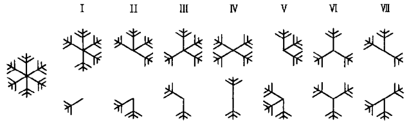
第14図
この時一方の核から枝がいくつ出るかは偶然に決るとすると、二核の場合第14図に示すような七つの組合せが出来るはずである。その中 が今述べた三花であるが、その外に例えば
が今述べた三花であるが、その外に例えば の場合は四花と二花とが出来るはずである。第15図（第５図版）はその例で、初めは普通の六花状に見えた雪を中央部をつついて分離して見たら、たまたま四花と二花から成っている結晶だったことが分ったのである。第14図の
の場合は四花と二花とが出来るはずである。第15図（第５図版）はその例で、初めは普通の六花状に見えた雪を中央部をつついて分離して見たら、たまたま四花と二花から成っている結晶だったことが分ったのである。第14図の から
から までの七種類の結晶は全部天然雪の中で発見され、その写真もそれぞれ撮ることが出来た。
までの七種類の結晶は全部天然雪の中で発見され、その写真もそれぞれ撮ることが出来た。
このようにして三花、四花などの結晶の成因が分って見れば、その分類も出来るのであって、これらの結晶は平板結晶中の二核結晶とすればよいのである。
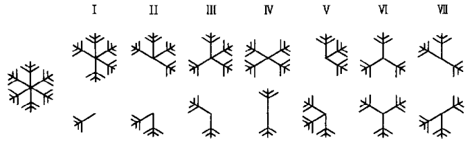
第14図
この時一方の核から枝がいくつ出るかは偶然に決るとすると、二核の場合第14図に示すような七つの組合せが出来るはずである。その中
が今述べた三花であるが、その外に例えばの場合は四花と二花とが出来るはずである。第15図（第５図版）はその例で、初めは普通の六花状に見えた雪を中央部をつついて分離して見たら、たまたま四花と二花から成っている結晶だったことが分ったのである。第14図のからまでの七種類の結晶は全部天然雪の中で発見され、その写真もそれぞれ撮ることが出来た。このようにして三花、四花などの結晶の成因が分って見れば、その分類も出来るのであって、これらの結晶は平板結晶中の二核結晶とすればよいのである。
８ 畸形
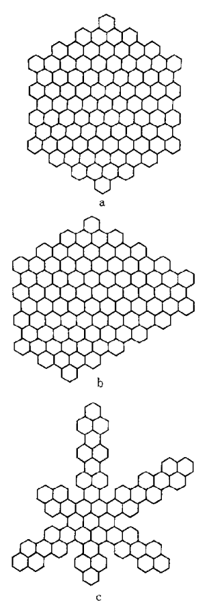
第16図
一平面内に発達する結晶でも実際は全部六次の美しい対称形即ち正規の六花となるとは限らず、それと同程度にしばしば畸形的な発達をすることがある。雪の結晶は全部六方晶系であるとしても、それは原子の配列が六次の対称を持っているというだけで、必ずしも外形まで規則正しい六次の対称をもっているとは限らない。例えば雪の結晶の基本形が小六角形としても、それが集った場合に大きい六角形になる場合もあれば、ならぬ場合もある。第16図に示すように、ａのような正六角形になる場合はむしろ例外でｂ、ｃ……といくらでも外形は変化して差しつかえないのである。結晶の外形は結晶習性と呼ばれるもので、この結晶習性の問題が雪の結晶の場合には大切なのであるが、その研究は結晶系、即ち六方晶系とか等軸晶系とかいう風な結晶の基本的原子配列の模様の研究に比しては、まだ十分には為されていないのである。
此処で畸形というのは規則正しい六花以外の平面結晶という意味で、結晶習性の問題からいえば、別に畸形ではなく、むしろ外形まで完全に六次の対称を示しているいわゆる正規六花状の結晶の成因の方がむしろ不思議なのである。畸形は殆ど無限の種類があるので、それを分類することは出来ないが、便宜上比較的簡単なものを類別すると左の五類になる。
（ａ） 他の核の附着によって生じた変形
この原因による変形はしばしば見られるのであって、結晶が半ば出来上った時、その一点に他の結晶核が附着したためにその後の発達が非対称的になったものである。その中一番簡単なものは、星状結晶の枝の一点に核が附着したもので、多くの場合、その核の付いた所だけに小枝が出るのである。一般に核が付くと其処で結晶は枝分れをするか、あるいは急に発達を早めるかすることが知られている。その理由は未だよく分らない。
角板の場合にも同様な現象があり、第17図（第６図版）に示したものがその良い例である。即ち初めの結晶がかなりの大きさの六角板に発達した時に、その一点に他の核が付いたために、その後の発達が著しく変形されたものである。
（ｂ） 左右対称に近い結晶
この種の結晶もしばしば見られる。これは結晶生成初期において核が二箇左右に並んで附着し合い、それから結晶が成長したために、左右対称に近い形になったものと思われる。核が二箇以上並んで附着した場合らしく思われる結晶もあるので、そのような時には結晶は大体左右対称の性質を持ちながら、もっと複雑な形となる。
（ｃ） 畸形角板
角板も正六角形とならず、色々変化することがある。その中一番簡単なものは、その一辺からＶ字形の切り込みが入る場合であって、それが沢山重ると随分複雑な形となる。それで角板の変形はこのＶ字形の切り込みの原因が分ると、かなり判明するものと思われる。人工雪で角板を作って見てもこの切り込みが入ることがしばしば見られるのであるが、その出来る原因はなかなか分らない。しかしかなり瑣細な条件の偏差で出来るものであることは確かである。
（ｄ） 枝の非対称的発達
枝の対称性ということは量的の問題で、正規な六花状結晶でも、詳しく調べると各の枝の微細な構造は対称的になっていないので、またそれが結晶の発達から考えて当然なのである。一般に大形の羊歯状六花結晶は、この意味においては非対称的というべきであるが、此処では特に一方向に著しく枝が伸びているものをこの類に算 えることとする。代表的な例は第18図（第６図版）に示す如くである。この場合は写真の上方に当る方向からの水蒸気の供給が著しかったものと考えられる。結晶は落下の途中、流体力学の知識から分るように、水平に近い位置を保ちながら落ちて来るはずで、その時鉛直線を軸として螺旋形 の道に沿って廻りながら落ちて来る。この廻転運動は枝の対称的発達を助けるのであるが、時にはこの写真のような非対称的のものもかなりしばしば見られるのである。
（ｅ） 複雑なる畸形
実際にしばしば見られる畸形は非常に複雑な構造を示しているものが多く、その類別をすることは出来ない。しかしよく見ると大抵は、今述べたような、核の附着による変形、角板中のＶ字切り込み、枝の非対称、その外に数枚の結晶の重畳というような各要素の複雑な組合せと思えば先ず良い。故にこれらの各要素の生成機構が分れば、畸形の結晶の説明も出来るはずである。
一平面内に発達する結晶でも実際は全部六次の美しい対称形即ち正規の六花となるとは限らず、それと同程度にしばしば畸形的な発達をすることがある。雪の結晶は全部六方晶系であるとしても、それは原子の配列が六次の対称を持っているというだけで、必ずしも外形まで規則正しい六次の対称をもっているとは限らない。例えば雪の結晶の基本形が小六角形としても、それが集った場合に大きい六角形になる場合もあれば、ならぬ場合もある。第16図に示すように、ａのような正六角形になる場合はむしろ例外でｂ、ｃ……といくらでも外形は変化して差しつかえないのである。結晶の外形は結晶習性と呼ばれるもので、この結晶習性の問題が雪の結晶の場合には大切なのであるが、その研究は結晶系、即ち六方晶系とか等軸晶系とかいう風な結晶の基本的原子配列の模様の研究に比しては、まだ十分には為されていないのである。
此処で畸形というのは規則正しい六花以外の平面結晶という意味で、結晶習性の問題からいえば、別に畸形ではなく、むしろ外形まで完全に六次の対称を示しているいわゆる正規六花状の結晶の成因の方がむしろ不思議なのである。畸形は殆ど無限の種類があるので、それを分類することは出来ないが、便宜上比較的簡単なものを類別すると左の五類になる。
（ａ） 他の核の附着によって生じた変形
この原因による変形はしばしば見られるのであって、結晶が半ば出来上った時、その一点に他の結晶核が附着したためにその後の発達が非対称的になったものである。その中一番簡単なものは、星状結晶の枝の一点に核が附着したもので、多くの場合、その核の付いた所だけに小枝が出るのである。一般に核が付くと其処で結晶は枝分れをするか、あるいは急に発達を早めるかすることが知られている。その理由は未だよく分らない。
角板の場合にも同様な現象があり、第17図（第６図版）に示したものがその良い例である。即ち初めの結晶がかなりの大きさの六角板に発達した時に、その一点に他の核が付いたために、その後の発達が著しく変形されたものである。
（ｂ） 左右対称に近い結晶
この種の結晶もしばしば見られる。これは結晶生成初期において核が二箇左右に並んで附着し合い、それから結晶が成長したために、左右対称に近い形になったものと思われる。核が二箇以上並んで附着した場合らしく思われる結晶もあるので、そのような時には結晶は大体左右対称の性質を持ちながら、もっと複雑な形となる。
（ｃ） 畸形角板
角板も正六角形とならず、色々変化することがある。その中一番簡単なものは、その一辺からＶ字形の切り込みが入る場合であって、それが沢山重ると随分複雑な形となる。それで角板の変形はこのＶ字形の切り込みの原因が分ると、かなり判明するものと思われる。人工雪で角板を作って見てもこの切り込みが入ることがしばしば見られるのであるが、その出来る原因はなかなか分らない。しかしかなり瑣細な条件の偏差で出来るものであることは確かである。
（ｄ） 枝の非対称的発達
枝の対称性ということは量的の問題で、正規な六花状結晶でも、詳しく調べると各
の枝の微細な構造は対称的になっていないので、またそれが結晶の発達から考えて当然なのである。一般に大形の羊歯状六花結晶は、この意味においては非対称的というべきであるが、此処では特に一方向に著しく枝が伸びているものをこの類に（ｅ） 複雑なる畸形
実際にしばしば見られる畸形は非常に複雑な構造を示しているものが多く、その類別をすることは出来ない。しかしよく見ると大抵は、今述べたような、核の附着による変形、角板中のＶ字切り込み、枝の非対称、その外に数枚の結晶の重畳というような各要素の複雑な組合せと思えば先ず良い。故にこれらの各要素の生成機構が分れば、畸形の結晶の説明も出来るはずである。
９ 立体樹枝型
以上の雪は一平面内に発達した結晶であるが、これらの平面結晶の枝が空間的に集って、全体として立体樹枝型となることがある。この種の雪は外国では記載が少いのであるが、それは前述のように、降らないのではなく記載がないのであろうと思われる。北海道では量からいったら、この種の雪の方が、平面六花のものよりもかえって多い位である。非常な濃雪で二十米 先も見えないという位の雪の時には、この種の結晶が多いのである。この型は大別して三種に分けることが出来る。
（ａ） 立体六花型
これは普通の樹枝状六花結晶を底面として持ち、その各点から樹枝状の枝が空間的に伸び出ているものである。第19a図（第６図版）に示したものがその例で、この写真は上方に伸び出ている枝に顕微鏡の焦点を合せて写真を撮ったもので、下の六花状の結晶はぼやけて写っている。この種の結晶は上空で既に小六花が出来て、それが落下する間に、枝の各点に結晶の核が沢山附着してそれから立体的に枝が伸び出たものと考えられる。
この結晶で立体的に出る枝は多くは基底をなす六花の結晶の一面から伸び出ている。第19b図（第６図版）はこの種の結晶の側面写真であるが、主な枝は皆上方に伸び出ている。これは落下の途中一方の面に多く核が附着し、また水蒸気の供給もその面の方が多いためであって、後述の雲粒付結晶の場合にも同様な現象が見られる。
（ｂ） 放射型
樹枝状の枝が中心から八方に伸び出ることもあって、その時は結晶は丁度栗の毬 のような形となる。第20図（第７図版）がその好い例である。この場合には中心に大きい種があり、その種は多くの場合短い角柱の集合である。もっともこの種が極めて小さく殆ど見られないものもある。前者は明かに上空に水蒸気の量が少く角柱状発達を生ぜしめるような状態の層があり、その下に樹枝状発達を生ずる水蒸気の多い層があることを示している。後者の即ち種の見えないものは、人工雪の研究の結果から、立体角板集合から発達したものだということが分った。
（ｃ） 立体角板集合
小角板が立体的に組合わされたもので、細 いうどん粉のような雪が降る時に、この種の結晶が見られることがあるが、我国では比較的稀な結晶である。
（ａ） 立体六花型
これは普通の樹枝状六花結晶を底面として持ち、その各点から樹枝状の枝が空間的に伸び出ているものである。第19a図（第６図版）に示したものがその例で、この写真は上方に伸び出ている枝に顕微鏡の焦点を合せて写真を撮ったもので、下の六花状の結晶はぼやけて写っている。この種の結晶は上空で既に小六花が出来て、それが落下する間に、枝の各点に結晶の核が沢山附着してそれから立体的に枝が伸び出たものと考えられる。
この結晶で立体的に出る枝は多くは基底をなす六花の結晶の一面から伸び出ている。第19b図（第６図版）はこの種の結晶の側面写真であるが、主な枝は皆上方に伸び出ている。これは落下の途中一方の面に多く核が附着し、また水蒸気の供給もその面の方が多いためであって、後述の雲粒付結晶の場合にも同様な現象が見られる。
（ｂ） 放射型
樹枝状の枝が中心から八方に伸び出ることもあって、その時は結晶は丁度栗の
（ｃ） 立体角板集合
小角板が立体的に組合わされたもので、
10 鼓型
第8b図（第４図版）のような角柱状結晶の両底面に平板結晶が付くと鼓型の結晶になる。外国ではこれを車輪型または茶卓 型といっているが、それよりも鼓型といった方が適切であろう。両底面に付く平板結晶が角板の時は本当の鼓のような形となるが、我国で観測されるこの種の結晶は、樹枝状の場合が多い。その一例は第21図（第７図版）の写真に示す通りである。
この鼓が幾つも重ると、角柱の両底面及び途中に何枚もの平板が付いた複雑な形となる。それを段々鼓と呼ぶことにする。段々鼓の一例は第22図（第７図版）の写真に示してある。また角柱の底面に付く樹枝状結晶が平面でなく前述の立体六花になることもある。この種の珍らしい結晶は外国でも古くからしばしば観測されているものである。段々鼓は人工的に作ることも出来るので、随ってその出来る条件も分ったのであるが、詳しいことは「雪を作る話」で述べる。
この鼓が幾つも重ると、角柱の両底面及び途中に何枚もの平板が付いた複雑な形となる。それを段々鼓と呼ぶことにする。段々鼓の一例は第22図（第７図版）の写真に示してある。また角柱の底面に付く樹枝状結晶が平面でなく前述の立体六花になることもある。この種の珍らしい結晶は外国でも古くからしばしば観測されているものである。段々鼓は人工的に作ることも出来るので、随ってその出来る条件も分ったのであるが、詳しいことは「雪を作る話」で述べる。
11 十二花
十二花の雪は従来からよく知られているもので、土井利位の『雪華図説』の中にもその模写がある。この種の結晶は多くは、二本目毎の六本が少し長く、中の六本が少し短い。しかし稀には十二本共全く同じ形の枝から成っているものもある。その一例は第23図（第７図版）の写真に見られる。
この種の結晶の成因については、ベントレーが既に、六花二箇に分離出来ることを報じている。私たちも十二花の結晶を見付ける毎にその分離を試みて、大抵の場合は成功した。そして分離した一方を顕微鏡下に立てて側面から見た結果、この種の結晶は平板と角柱との組合せで、ただ二つの平板結晶を結ぶ角柱が短いために、十二花とも同一平面内にあるように見えるということが分った。
稀にはこの基本結晶が三枚重ることもあり、その時は十八花の結晶となる。これらの十二花、十八花などは、こうして構造が分って見ると、一般分類の中では、角柱平板組合せの中に入れることが出来るのである。
この種の結晶の成因については、ベントレーが既に、六花二箇に分離出来ることを報じている。私たちも十二花の結晶を見付ける毎にその分離を試みて、大抵の場合は成功した。そして分離した一方を顕微鏡下に立てて側面から見た結果、この種の結晶は平板と角柱との組合せで、ただ二つの平板結晶を結ぶ角柱が短いために、十二花とも同一平面内にあるように見えるということが分った。
稀にはこの基本結晶が三枚重ることもあり、その時は十八花の結晶となる。これらの十二花、十八花などは、こうして構造が分って見ると、一般分類の中では、角柱平板組合せの中に入れることが出来るのである。
12 平板付砲弾
第９図（第４図版）のような砲弾組合せに樹枝状その他の平板結晶が付くこともある。第24図（第８図版）はその一例であって、随分珍らしい複雑な構造の結晶である。こういう結晶が沢山降って来る時に、それを硝子板に受けては覗いていると、随分神秘的な感じがするものである。
13 側面結晶
一九三五年一月十六日の夕方、札幌において従来全く知られていないと思われる妙な形の結晶ばかりが短時間降ったことがあった。その結晶は角柱と平板との不規則な集合であって、その時撮った写真の中の一枚を第25図（第８図版）に示す。その後注意していると、この種の結晶は時々少数ずつ雑って降って来ることが知られた。札幌でもその後時々見られたが、特に十勝岳においては再々観測された。
初めはこの種の結晶は何と分類してよいか分らなかったのであるが、その後人工雪や人工霜の実験をしている中に、角柱の側面が平板となって伸び出たような形のものが出来ることを知った。その構造を調べた結果、第25図（第８図版）に示したような結晶も、角柱の集合から側面が不規則に伸び出たものと思われるようになった。それでこの種の結晶を側面結晶と名づけて、一つの新しい種類として一般分類に入れることにした。
初めはこの種の結晶は何と分類してよいか分らなかったのであるが、その後人工雪や人工霜の実験をしている中に、角柱の側面が平板となって伸び出たような形のものが出来ることを知った。その構造を調べた結果、第25図（第８図版）に示したような結晶も、角柱の集合から側面が不規則に伸び出たものと思われるようになった。それでこの種の結晶を側面結晶と名づけて、一つの新しい種類として一般分類に入れることにした。
14 不規則なる角柱平板組合せ、「粉雪」
山岳地方や寒地でしばしば「粉雪」と称する種類の雪が降ることがある。粉雪という言葉は前にも述べたように、積雪の性質を示す時以外にも、雪片形成状態を指して使われることもあるが、此処でいう「粉雪」とは、粒が非常に細く、降り立てのものが積った様子は全くうどん粉のような外観を呈しているものである。高山でスキー家たちはしばしばそういう種類の新雪に遭遇されたことがあるだろうと思う。
この「粉雪」の顕微鏡写真は第26図（第８図版）に示す如くであって、角柱と小角板との不規則な集合である。この小角板も側面結晶らしく思われるが、未だ確かめられない。この種の結晶は非常に小さいもので、方射型樹枝その他の立体的の大形の結晶はこれらの微小結晶を種にして生長するものと思われる。前出微小角板のように初めから平面状になっているものもあり、この「粉雪」のように立体的になっているものもある。人工雪の研究で、これらの結晶初期状態がその後の生長の様子をかなりに支配することが分った。
この「粉雪」の顕微鏡写真は第26図（第８図版）に示す如くであって、角柱と小角板との不規則な集合である。この小角板も側面結晶らしく思われるが、未だ確かめられない。この種の結晶は非常に小さいもので、方射型樹枝その他の立体的の大形の結晶はこれらの微小結晶を種にして生長するものと思われる。前出微小角板のように初めから平面状になっているものもあり、この「粉雪」のように立体的になっているものもある。人工雪の研究で、これらの結晶初期状態がその後の生長の様子をかなりに支配することが分った。
15 雲粒付結晶
殆どすべての型の雪の結晶に、小水滴が沢山付いていることがしばしば見られる。北海道の観測では、降雪回数の三分の一位は小水滴付のものが混っている。内地の雪では多分もっとしばしば小水滴付の結晶が見られることと思う。この点はジェリコにおけるベントレーの観測結果とは著しく異るのである。即ちベントレーの蒐集 では、小水滴付の結晶はむしろ稀な場合であった。第27図（第８図版）は樹枝状結晶に小水滴が付いた例であるが、この外針状角柱状を初め、殆どすべての種類の結晶にも付くことがある。
この小水滴の大きさを測るために、第27図のような写真を大きく引伸して、その拡大写真上で水滴の直径を一々測って見た。全部で百七十五の測定値を調べて見ると、水滴の直径は大小色々あるが、〇・〇三粍 位のものが一番多く、その前後に散在した値を示した。ところが従来色々な人が雲の粒子の直径を測っているのであるが、その結果は例えばワグナー氏の測定値によると、大体直径〇・〇三三粍となっており、その他の人の値も大体それと似寄った値となっている。これらの測定は雲粒を直接顕微鏡で測ったものではなく、強い光を雲にあてて暈輪 を作り、その直径から光学の理論を適用して算出したものである。ところで今度雪の結晶に付いている小水滴の直径が丁度この値と一致していることから、この種の雪は雲粒付結晶であることが分ったのである。
この種の結晶は雲粒を直接に雪が捕えて来てくれたという点で興味があるばかりでなく、上層の気象状態を推測する一つの手がかりを与えるものと見て意味がある。即ちこの種の雪が降る時は、結晶が生長した層よりも下の地表に近い所に、過冷却水滴よりなる雲の層があったことを示すものと見られるのである。
この小水滴の大きさを測るために、第27図のような写真を大きく引伸して、その拡大写真上で水滴の直径を一々測って見た。全部で百七十五の測定値を調べて見ると、水滴の直径は大小色々あるが、〇・〇三
この種の結晶は雲粒を直接に雪が捕えて来てくれたという点で興味があるばかりでなく、上層の気象状態を推測する一つの手がかりを与えるものと見て意味がある。即ちこの種の雪が降る時は、結晶が生長した層よりも下の地表に近い所に、過冷却水滴よりなる雲の層があったことを示すものと見られるのである。
16 厚板
時々平板状結晶で非常に厚いものが降ることがある。顕微鏡の下で反射光で見ると、一面に白い小粒が重ったように見え、透過光で見ると、全体が黒く見えるものである。この結晶を切って、その断面を顕微鏡で見ると、第28図（第９図版）の写真に示すような構造をしていることが分る。この写真で分るように、これは六花平板状の結晶の面に雲粒が幾重にも附着して全体として厚い板になったものである。面白いことには、雲粒は主として結晶の一面にのみ附着しているのであって、落下の途中下面になった方だけに付いたものと思われる。冬の高山で見られる霧氷の場合にも、霧の粒は風上の面に多く附着することはよく知られている事柄である。この種の結晶はいわば霧氷の付いた雪の結晶なのである。
この厚板は外国の文献には余り見当らぬようであるが、北海道特に十勝岳においては頻繁に観測される。札幌でも時々見られる。
この厚板は外国の文献には余り見当らぬようであるが、北海道特に十勝岳においては頻繁に観測される。札幌でも時々見られる。
17 霰状雪及び雪から霰への遷移
北海道においては、霰は初冬と限らず真冬でも盛に降る。もっとも内地で初冬に見られる霰よりも少し小形のようである。大抵雲粒付結晶や厚板と雑って降って来ることが多い。これらの霰には大抵三種類あって、円錐形、塊状及び六花の痕跡を留めているものに分類することが出来る。六花の痕跡を有する霰というのは、第30図（第９図版）に示すようなものである。
これらの霰の成因については、既にバーコフ氏などもいっていることであるが、普通の雪の結晶に雲粒が非常に沢山附着して出来たものと考えられる。十勝岳において殆ど連日この種の結晶を観測している中に、雪の結晶に雲粒の附着する度合は連続的に変化していて、単なる水滴付結晶から、雪と霰の中間的のものを経て、霰に到るまでの各段階の状態にある雪を観測することが出来たのである。普通の平板結晶に雲粒が沢山附着した時は厚板になるのであるが、立体樹枝型のものに沢山雲粒が付くと、段々霰に似て来るのである。これらの雪と霰の中間にあるものを霰状雪と称することにする。放射型のものに沢山雲粒が付くとそれは塊状霰になるらしい。また第19a図及び第19b図（第６図版）のような立体六花に雲粒が付くと六花霰になることが分った。立体六花の霰状雪の例として、第29図（第９図版）の写真に示したような結晶を挙げることが出来る。これはその側面の写真である。
錐状霰の成因については以前から落下の途中廻転するためであろうという考えで、色々研究があり、大体そういうことに落付いているようであるが、今一歩確める必要がある。
霰の成因を以上の如くに考えると、その出来る気象状態は、上層に雪の層があり、その下に過冷却の水滴より成る雲の厚い層があることになる。このことは岡田博士の名著『気象学』にも書かれており、別に新しいことではないが、雪と霰との中間物即ち霰状雪の各種のものの写真が撮れ、その説を確めたということになるのである。
これらの霰の成因については、既にバーコフ氏などもいっていることであるが、普通の雪の結晶に雲粒が非常に沢山附着して出来たものと考えられる。十勝岳において殆ど連日この種の結晶を観測している中に、雪の結晶に雲粒の附着する度合は連続的に変化していて、単なる水滴付結晶から、雪と霰の中間的のものを経て、霰に到るまでの各段階の状態にある雪を観測することが出来たのである。普通の平板結晶に雲粒が沢山附着した時は厚板になるのであるが、立体樹枝型のものに沢山雲粒が付くと、段々霰に似て来るのである。これらの雪と霰の中間にあるものを霰状雪と称することにする。放射型のものに沢山雲粒が付くとそれは塊状霰になるらしい。また第19a図及び第19b図（第６図版）のような立体六花に雲粒が付くと六花霰になることが分った。立体六花の霰状雪の例として、第29図（第９図版）の写真に示したような結晶を挙げることが出来る。これはその側面の写真である。
錐状霰の成因については以前から落下の途中廻転するためであろうという考えで、色々研究があり、大体そういうことに落付いているようであるが、今一歩確める必要がある。
霰の成因を以上の如くに考えると、その出来る気象状態は、上層に雪の層があり、その下に過冷却の水滴より成る雲の厚い層があることになる。このことは岡田博士の名著『気象学』にも書かれており、別に新しいことではないが、雪と霰との中間物即ち霰状雪の各種のものの写真が撮れ、その説を確めたということになるのである。
18 無定形の雪
以上述べた雪の各種類のどれにも属せしめられない無定形に近い雪も沢山降るのである。これらを纏 めて無定形の雪というのであるが、この無定形の雪は案外沢山降るのであって、今後その性質が詳しく分れば、更に改めて分類しなければならないかも知れない。第31図（第９図版）に示すものは無定形の一種で氷片状をなしているものの例である。この外にも樹枝の痕跡があって、それに小水滴が沢山付いているものもしばしば降り、その外にも色々のものがある。
以上各種類の結晶についてそれぞれ説明した如く、我国で観測される雪の結晶は非常に種類が多い。これらの全部を網羅する一般分類を試みたのであるが、その結果は一般分類図に示す如くである。その骨組はヘルマン、ノルデンショルドなどの分類と結局似たものであるが、新しい種目を加えたり、結晶構造の究明から分類項目を変えたり、針状結晶を別にしたり、霰状雪や無定形などの従来閑却されていたものを重視したりして、全体を包括的のものとした。しかしこの一般分類も最終的のものではなく、今後の研究によって幾分修正さるべきものと思っている。
この一般分類図から見て分るように、雪の結晶は極めて種類が多く、従来雪の代表の如くに思われていた六花状の結晶は、実際に降る雪の全量の中ではほんの一部に過ぎないことが分った。それでは次に、これらの多種多様な結晶がどれ位の割合で雑って降るか、どの結晶が一番多く降り、どの種類が稀であるかということを調べて置く必要がある。
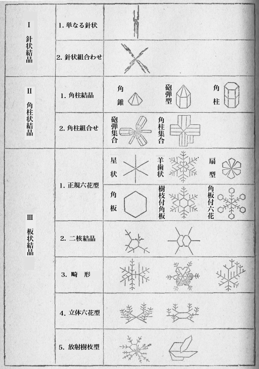
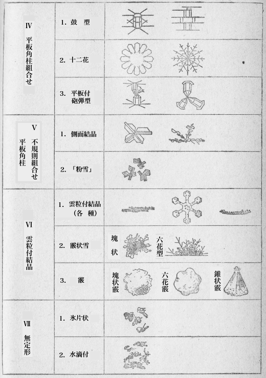
第32図
ところが、この仕事は実はなかなか大変な仕事なのであって、降雪中殆ど戸外にい続けて、適当な間隙をおいて雪の結晶を硝子板に受け、その種類を記載する必要がある。そのために十勝岳のような所では、零下十度以下の戸外で数時間もの連続観測をするのであるから、
観測は「精」と「粗」との二種に分け、「粗」の方は拡大鏡による肉眼観測であるが、「精」の方は顕微鏡を用い、一度に二、三十の結晶を硝子板に受け、その種類と数と同時に大きさとを記録することとした。これを一回の観測と算えて、こういう観測を五分
観測は札幌と十勝岳とで行い、降雪日数五十四日、全観測回数九百七十四回に及んだ。その結果を整理して見てはっきりと分ったことであるが、殆どすべての降雪は各種の結晶の混合から成っているのである。時には例えば六花状の結晶ばかりが降るように見えることがあっても、暫く続けて観測している中に他の種類のものが雑って来、また次の種類のものが降り始めるという
こういう現象は、上空の気象状態が非常に複雑だということを示すのである。即ち上空の各層の気象状態がそれぞれ異り、各
の層で別の形の結晶が出来、地表に近い所で出来た結晶はそのままに近い形で地上に達し、上層で出来たものは落下途中で更に色々な成長をなして地上に達する。ところが結晶の形によって落下速度が異るために、落下の途中で前後が生じ、色々の形の結晶が入り乱れて同時に地上に達するものと思われる。それに上昇気流や下降気流が加わるので問題は一層複雑になるのであろう。このように多くの種類の結晶が互に入り乱れて同時に降るということは、外国の記録には余りないようである。欧洲の観測結果では、よく、気温何度の時にどのような結晶が降り、何度になったら異った結晶になったという風な記録があるが、それから見ると、欧洲の降雪はもっと簡単なようにも思われる。それでわれわれが今見たような現象は我国の気象状態が非常に複雑なために起る現象ともとれるが、カスナー教授の手紙によると、
一冬の間の観測を整理して、各結晶の降下頻度を多、中、少、稀と四つに分けて見ると、次のような結果となった。
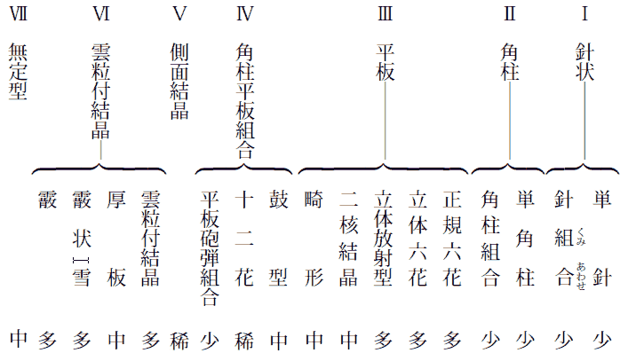
この結果から見て、前の論点、即ち六花状の美しい形の雪というのは、天然に降る雪のほんの一部をなしているのに過ぎないので、色々雑多な形の雪が本当は沢山に降っているということがよく分るのである。次に大空の高いところで出来たこれらの雪がわれわれの地上へ落ちて来るまでにはどの位の時間がかかるかという問題がある。これはその時の状態によって異り、また雪片の大きさによって異るはずであるから、簡単にいうことは出来ない。
前に述べたように、気温の少し高い時には沢山の結晶が集まって雪片となって降るのであるが、その落下速度は雪片の大きさによって異るので、どの位と決ってはいない。風のない昼など牡丹雪が真直に静かに降っている時に、ちょっと注意された人は大きい雪片が小さい雪片を追い越して落ちて来るのをよく見られたことがあるだろう。
北海道などのような寒い所では普通雪片と単一の結晶とが入り乱れて降ることが多いのであるが、もっと寒い所では雪は全部個々の結晶となって降っているのであろう。ところでこの個々の結晶の落下速度はいままで測定されたものが全くないようであるから、私たちは結晶の各種類について、その大きさと落下速度との関係を調べて見ることとした。それと同時に個々の結晶の目方も測定して置く必要があると思われたので、そのために新しい簡単な方法を考案して、それとの関係も調べて見た。普通雪片のみが降るような比較的暖い土地でも、上層においては結晶は個々分離した状態で降っていると思われるので、その落下速度を知って置くことは、後に人工で結晶を作った時、その結晶の生長速度から、同様の結晶の出来る場所の高さを推測する時に必要なのである。これを逆にいえば、人工で雪の結晶を作った時に、天然に降って来た同様の結晶が、どの位の上層で出来始めたものかということを大体見当つけようというのである。
この落下速度の測定は、主として十勝岳で行った。ここは真冬の間はどんな暖い時でも零下五度以上に気温が昇ることはないので、ここに述べるような測定方法を用いることが出来るのである。
先ず目方を測る方法であるが、零度以下の気温の所でも雪の結晶は昇華作用でどんどん蒸発して小さくなるものであるし、それに一つの結晶の目方は百分の一
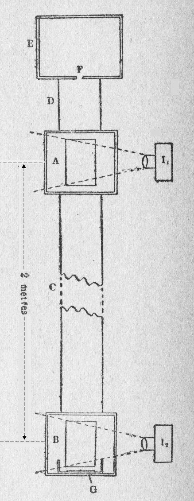
第33図
次に結晶の落下速度を測るには次のような直接の方法を用いた。即ち密閉した円筒を垂直に立て、その中の一定の距離を落下するに要する時間をストップウォッチで測定するという方法なのである。円筒というのは、ブリキ製の
即ちＥは前面の明いている木箱でその底の小さい
ＡとＢとを注視していて、其処を結晶が通過するに要する時間を測った。Ｇはパラフィンを塗った硝子板で、落下した結晶を受けるために挿入したものである。装置の説明は前述の如くであるが、実験の手順を簡単に記すと、先ず降って来た結晶を、写真を撮る項に述べたように、冷い硝子の板で受取り、その中で必要な結晶を素早く写真に撮って、その硝子板を結晶が載ったままＥ、即ち上の木箱に入れて、その中でマッチの棒をほぐした先で結晶をひっかけてＦ孔に入れる。結晶を入れると同時に孔を塞ぐことは前にのべた通りである。すると手提電燈で照されたＡ及びＢのところを結晶がキラリと光って通る。その瞬間をそれぞれ合図してストップウォッチで測るのである。そしてＧの硝子板に落ちた結晶は裏から指先で暖めて、小さい水滴とし、その直径を測るのである。これで一つの結晶についての測定は終るのであるが、巧く全過程をやるにはなかなか熟練を要するのである。何分相手は顕微鏡で見るような小さいものであるし、どんどん雪が降っている厳寒の野外での実験であるから、巧く行かないのも当然である。しかしこんなことでも皆が気を揃えて根気よくやっていると段々馴れて来て、これだけの全操作を一分
この測定によって、結晶の落下速度を色々の結晶の種類についてそれぞれ測ることが出来たのであるが、今までの一般分類では余りに詳し過ぎてかえって面倒になり、かつ資料がそれほど沢山集らなかったので、簡単に結晶を六種に分類してその各
について調べることとした。即ち
１） 針状（偶然に針が沢山に降ったのでその性質が調べられた）
２） 平面樹枝型（羊歯状と普通樹枝状とが多かった）
３） 立体樹枝型（立体六花と放射型の両者）
４） 粉雪（角柱角板組合せ、その他小形の結晶を含む）
５） 水滴付結晶（針を除き全部、厚板、霰状雪を含む）
６） 霰（各種のもの）
これら六種のものの落下速度を示すには図が一番手取早いと思うので、第34図にその結果を纏めて示すこととする。２） 平面樹枝型（羊歯状と普通樹枝状とが多かった）
３） 立体樹枝型（立体六花と放射型の両者）
４） 粉雪（角柱角板組合せ、その他小形の結晶を含む）
５） 水滴付結晶（針を除き全部、厚板、霰状雪を含む）
６） 霰（各種のもの）
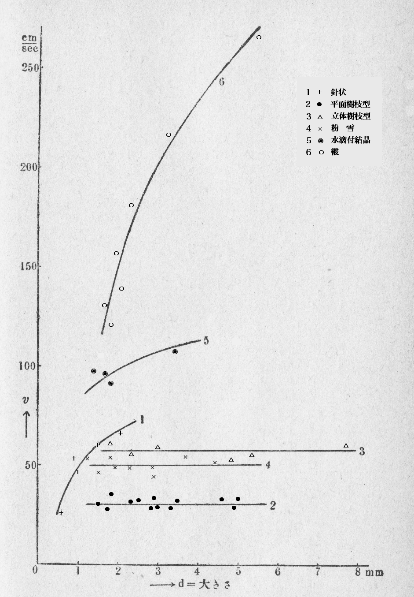
第34図
この図は横軸に結晶の大きさを採り、縦軸に落下速度を採ったもので、即ち結晶の大きさと落下速度との関係を示したものである。この図から分るように、面白いことには、立体及び平面樹枝結晶並に「粉雪」は、結晶の大きさに無関係に落下速度が一定であるということである。即ち平面樹枝結晶は直径一・五
結晶の目方と大きさとの関係も今までの実験の結果を整理すれば同時に出せるのである。そして第34図と同じように、結晶の大きさと目方との関係をまた別の図として作ったのである。そしてそれらの測定資料から各結晶の目方と落下速度との関係も見ることが出来た。そのために各結晶の目方と落下速度との平均値を作って見ると大体左の表の如くなった。
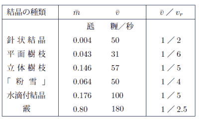
この表の中で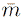というのは平均の目方であり、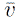というのが平均の落下速度である。そして最後の行の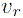というのはなる雪がもし雨となって降ったとした時の落下速度である。即ち
の結晶について、それがもし雨となって降った時の落下速度の何分の一になるかを示すものである。これで見ると普通の六花即ち平面樹枝の結晶はになり、雨に比して非常に遅いものであることがわかる。この結晶ではは一秒間に三十一糎の速度となっているが、それは一以上で大体北海道における私たちの雪の研究の経過をつくしたのであるが、この外に雪の持つ電気的性質の研究とか、各種の結晶の代表的の大きさの問題とか、それから結晶形と気象要素との関係なども調べたのであるが、余り問題が特殊になるので本書では省くことにして、次にこれらの雪の結晶を人工的に作る実験の話に入ろう。
［＃改ページ］
雪が人工で出来ないものだろうか。それは四、五年前までは私にとっては全くの夢であった。そして私ばかりではなく、各国のこの方面の学者たちの中でも真面目に雪を作ろうなどと思っていた人はなかったようである。私は初め、単に天然の雪華を顕微鏡写真に撮ることにとりかかった。そして雪の降る日は毎日のように廊下に持ち出した顕微鏡を覗いていたのであるが、いくら北海道でもそう毎日雪が降ってばかりもいない。それで雪の降らぬ時は合の手として、実験室や廊下などの窓に出来ている「霜の花」の写真を撮ることにした。その「霜の花」にも雪の結晶と類似の色々の変った結晶が見られるのでなかなか面白かったのである。そんなことをしている中にその年の冬の終り頃になって、もう雪も降らず「霜の花」も余り咲かなくなって来た。その頃になって私は次の問題としてこの「霜の花」を人工で作って見ようという気を起した。それで食塩と雪とで銅の箱を冷して置いてその面へ水蒸気を送ってやって、「霜の花」を作ることを試みた。それは案外簡単に出来たのである。もっともそれは、悪友の一人に「便所の窓にだって出来るものだから、実験室で出来るのは当り前じゃないか」といわれて、大笑いになってしまった。しかし便所の窓で気のついたことは、この「霜の花」が雪の結晶と形が違うのは、そして硝子面の性質によっても著しく形の異るのは、硝子面にいつでも附着している有機化合物の薄膜によるのではないかという点であった。それで硝子面にいろいろの
この「霜の花」を作っているうちに、私の頭の中にいつの間にか、雪の結晶も人工で出来はしまいかという気持が
始終そういう気持を持ちながら、天然の雪とそれに直接の関係がある霜とを見ていたら、
十勝岳の白銀荘附近では、真冬の間の気温は、零下十度
十勝岳で観測された霜の中一番見事なものは雪中霜であった。大樹木の切株や岩の蔭にはよく大きな雪の洞が出来ていて、その壁に色々の形の霜が発達しているのである。外観上それらは針状、羽毛状、杯状、平板状の四種に分類出来る。その外立木の枝の上に出来る樹霜は完全な樹枝状をしていることが多い。これらの結晶の習性は雪と全く同じものである。今これらについて簡単な説明をして見ると左のようにいうことが出来る。
（１）針状 雪の針状結晶と外観は似ていて、普通直径〇・二粍 乃至〇・五粍位、長さ一糎 ほどの針になって雪面から突出している。顕微鏡で見ると小角柱から成っていて、雪の角柱結晶と比較して見ると、その構造は全く同じであることが分る。
（２）羽毛状 この種類は十勝岳では最も多く観測されるものであって、長いものは五糎乃至七糎位まで伸びているものもある。外観は鳥の羽のように見えるが、顕微鏡下で調べると、（１）の針状結晶が束になって特殊の配列をするために出来たものということが分る。
（３）杯状 この種類の完全なものは、六角の洋酒杯のような形になるのであるが、普通その一部分を形成している程度のものが多い。
（４）平板状 これは雪の洞の天井からぶら下っていることが多い。杯状の霜の尖端が広がって平板になることが多く、これと雪の板状結晶とを比較して見ると、殆ど同じものであることがわかる。
（５）樹枝状 これは雪中霜には余り見当らないが、立木の枝または新雪表面には沢山出来る。特に風のない静かな夜のうちに出来、翌朝旭日 に輝いていることが多い。新雪表面に出来た場合にはスキー家たちが「葉雪」という特殊な名前で呼んでいる。顕微鏡下では羊歯 状の構造を示すことが多く、雪の羊歯状平面結晶と同じである。ただ内部の微細構造は消えていることが多い。それは昇華のためである。
これらの霜の結晶と雪の結晶とを較べて見て、各種の霜の結晶が出来る時の条件がわかれば、それから各（２）羽毛状 この種類は十勝岳では最も多く観測されるものであって、長いものは五糎乃至七糎位まで伸びているものもある。外観は鳥の羽のように見えるが、顕微鏡下で調べると、（１）の針状結晶が束になって特殊の配列をするために出来たものということが分る。
（３）杯状 この種類の完全なものは、六角の洋酒杯のような形になるのであるが、普通その一部分を形成している程度のものが多い。
（４）平板状 これは雪の洞の天井からぶら下っていることが多い。杯状の霜の尖端が広がって平板になることが多く、これと雪の板状結晶とを比較して見ると、殆ど同じものであることがわかる。
（５）樹枝状 これは雪中霜には余り見当らないが、立木の枝または新雪表面には沢山出来る。特に風のない静かな夜のうちに出来、翌朝
の霜に対応する雪の結晶の生成機構を推測することが出来るはずであると考えるようになった。雪の結晶を人工的に作ることは非常に困難らしく思われたが、霜の結晶ならば割合に水蒸気を凝結させて氷の結晶を作ることは、既にカリホルニア大学のアダムス教授が試みたことを一九二〇年に報告している。彼は硝子板を冷して置いて、その上に水蒸気を通して微小な氷の角柱結晶を作っているのであるが、その時の彼の目的は我々の望むところと違うので、その結晶の生成条件にふれていないのである。また彼の作った角柱結晶というものは非常に小さいもので、三百倍の顕微鏡下で形が分る程度のものである。これでは雪の結晶ということは出来ない。われわれもまた彼のように、冷い硝子板を下に置いて、その上に暖い水蒸気を通して見たのであるが、その時もやはり霜を十分な大きさに発達させることが出来なかった。ところが偶然な思い付きで冷却板を上に置いて、暖い水蒸気を下から自然対流で送ってやって見ると、思いがけなく十分に発達した大きい霜の結晶を得ることが出来たのである。そして供給する水蒸気の温度と出来る場所の温度とを色々かえると、各種の霜の結晶が出来ることがわかったのである。
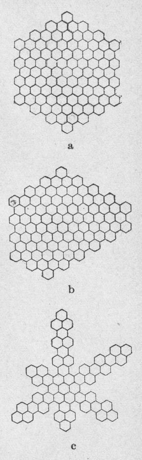
第35図
この実験の装置は第35図に示す通りである。
Ａは銅で作った箱で、中に酒精を満たし、その中に銅の
つまり下の木箱の方から見れば天井が銅板になっているわけである。この銅の天井へ霜の結晶を附着させるのである。Ｂは保温用の木の箱で、ＡとＢ、つまり木箱と銅箱との間には綿をつめる。Ｃはやはり木の箱で、前面は硝子を
この実験によってわれわれの知ったことは次の如くである。少し専門的な説明になるかも知れないが、この部分は相当必要な事柄であるし、かつ読者が興味をもって読まるれば、訳なく諒解されるはずのことである。結晶の形をきめる主な条件は過飽和の度であるということは、雪の場合と限らず結晶一般の性質として分っていることである。この実験ではその点が更に詳しく明かにされたのであるが、その説明に先だって、飽和、過飽和及びそれに関係ある事柄について簡単に触れて置くこととする。
われわれの大気中には常に水蒸気が多少含まれていて、一立方
この水蒸気で飽和した空気を漸次冷して行くと、その水蒸気の一部は、気温によって水滴になるかまたは氷の結晶となって分れ出るはずであるが、実際は空気中に前に述べたような吸湿性の細塵やイオンなどがないと、水蒸気は凝結の手がかりがないために温度が下っても凝結しないでいる。この状態では水蒸気はその気温での飽和の状態以上に存在するので、即ち「過飽和」の状態になっているのである。空気がこういう過飽和の状態になってしかも気温が零度以下の時に、何か核になるものがあると、其処から雪の結晶が生じ、更にその後過飽和の空気がこの結晶に触れると雪はどんどん生長して行くのである。
ところで第35図においてＣなる箱の内部での水蒸気流の状態を見るために、下の水温が室温より高い場合と低い場合とについて、それぞれ箱内の各点での温度を測定して見た。その温度分布状況を見ると、水温がかなり高い時でも大体箱の内部は一様に室温に近い値となっていた。この時箱の内部を、硝子板を通してよく見ても、著しい霧のようなものは見えない。つまり水蒸気は過飽和の状態で上部の場所に運ばれ、そこで霜の結晶となって凝縮するということが分ったのである。
ところで結晶形はととで主として決定されているらしいので、この時の過飽和の度合をきめる必要がある。その目安として過飽和の比
この
この実験の結果では
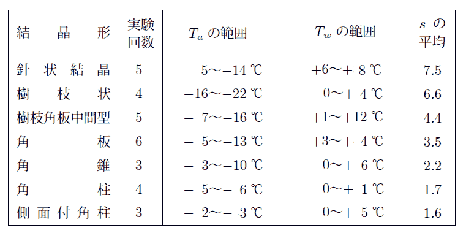
こういう風にして作った各種の霜の結晶は大体において雪の結晶と同じものであるが、中には少しく違っているものもあった。
各
の結晶について簡単な説明をすると、
（１）針状結晶 過飽和の比が一番大きい時に針状が得られたことはちょっと意外であった。この結晶は、針が数本並行に束になっている点も雪の場合に似ている。過飽和比 は六乃至八の範囲内にあって平均七・五になっている。雪の針状結晶が気温が高く水蒸気の量が多いと思われる時降ることと、この実験の結果とはよく一致している。
は六乃至八の範囲内にあって平均七・五になっている。雪の針状結晶が気温が高く水蒸気の量が多いと思われる時降ることと、この実験の結果とはよく一致している。
（２）樹枝状平板結晶 樹枝状結晶が水蒸気の供給が多い時、即ち生長速度の大きい時に出来ることは、雪の場合と限らず結晶一般の性質である。この実験の条件ではの平均が六・六位の時にこの樹枝状が得られた。
（３）樹枝角板中間型をだんだん減少して行くと、前述の樹枝の一部を示す鱗片が拡がって来る。そしてが三・五乃至五・五位の範囲内では小角板が集まって簡単な樹枝状をなしたような即ち樹枝角板中間型となる。
（４）角板を更に小さくすると、即ち三乃至四の範囲内では角板が益大きくなって来る。その時出来る角板は勿論一枚であるが、このような角板が六枚集った雪は実際に沢山存在する。また稀には全くの六角板が出来ることもある。この種の六角板の結晶は霜の糸が垂れ下って、その先端に、糸に殆ど垂直に附着して発達したものである。即ち附着すべき固体表面の影響を余り受けなかったので、正規の六角の形、つまり空中に浮游して出来る雪の形と似たものになったのである。
（５）角錐 角錐は天然の雪の結晶の中では最も珍しいものであるが、人工霜の場合は比較的簡単に出来た。この角錐と次の角柱とは殆ど同じ条件で出来たのであって、が樹枝などの場合と比較して三分の一以下に小さくなった場合である。結晶生長速度は随って非常に遅く、大形の結晶は得られない。
（６）角柱 これも非常に小さい結晶としてのみ得られる。角柱と角錐とは同時に出来ることが多い。二つの組合せからなるいわゆる砲弾型のものもしばしば観測された。
（７）側面結晶 角柱結晶を作っている間に、角柱の一側面が延び出たような形のものが時々得られた。この時のは一・六位で角柱の出来る条件と大体同じであった。この側面結晶が実験室内で出来たので、天然雪の一般分類の中にも側面結晶という新しい種目を入れることが出来たのである。
以上に述べたように、天然の雪の各結晶にそれぞれ対応する霜の結晶が、人工的に作られたので、その条件から天然の雪の生成条件を幾分類推することが出来るようになった。しかしまだこの実験で得られた霜の結晶は雪の結晶とは完全な一致を見ていないものもあったので、更に進んで本当の雪と全く同じものを作る実験に入る決心をしたのである。（２）樹枝状平板結晶 樹枝状結晶が水蒸気の供給が多い時、即ち生長速度の大きい時に出来ることは、雪の場合と限らず結晶一般の性質である。この実験の条件では
（３）樹枝角板中間型
（４）角板
大きくなって来る。その時出来る角板は勿論一枚であるが、このような角板が六枚集った雪は実際に沢山存在する。また稀には全くの六角板が出来ることもある。この種の六角板の結晶は霜の糸が垂れ下って、その先端に、糸に殆ど垂直に附着して発達したものである。即ち附着すべき固体表面の影響を余り受けなかったので、正規の六角の形、つまり空中に浮游して出来る雪の形と似たものになったのである。（５）角錐 角錐は天然の雪の結晶の中では最も珍しいものであるが、人工霜の場合は比較的簡単に出来た。この角錐と次の角柱とは殆ど同じ条件で出来たのであって、
（６）角柱 これも非常に小さい結晶としてのみ得られる。角柱と角錐とは同時に出来ることが多い。二つの組合せからなるいわゆる砲弾型のものもしばしば観測された。
（７）側面結晶 角柱結晶を作っている間に、角柱の一側面が延び出たような形のものが時々得られた。この時の
人工霜から更に進んで人工雪を作ろうと決心しても、決心や信念だけで自然現象が分るわけもないので、仕方なく唯一の手がかりたる霜の結晶をもっとよく見ることとした。先ず前の実験装置で霜の結晶が何故自然にちぎれて落下するかということを見るために、銅箱の底に銅の
この実験室は一九三六年の二月に出来上った。その主な実験室は、縦、横、高さ各
四米で、即ち八畳の間位の大きさである。この室が年中零下五十度までの任意の温度に冷して、その寒冷の温度で保てるようになっている。外にその主室の半分の大きさの副室がついていて、この方は零下三十度まで冷却出来るようになっている。冷却機はアンモニア使用の製氷機である。この実験室が出来たので、大喜びで早速人工霜の装置を低温室内へ持ち込んで、大いに馬力をかけて実験することとした。もっとも零下五十度まで冷せるといってもそんなことは止むを得ぬ時だけにして、大抵の実験は零下三十度附近の所で行うことにした。それでもこの室へ入る者は、毛皮の防寒服、防寒頭巾、防寒靴及び手袋を着用しなくてはならないことは勿論である。丁度北満の厳寒の野に立つ零下三十度といっても、風がないので、はいった当座はそれほど寒いとも思わないのであるが、三十分も中で仕事をしていると、急に身体が冷えて来る。特に夏がいけないのであって、外の気温が三十度近くある時などは、急に六十度からの気温の激変に会うことになる。そういう気温の激変に度々会っていることは、健康のためには勿論よくない。それでも少しずつ身体を馴らして行くと、案外耐えられるのである。
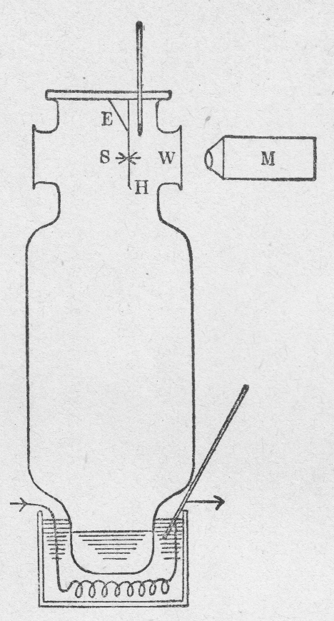
第37図
ところでこの室で実験をするためには、前に示した人工霜の装置を少し改める必要がある。前図のＡ及びＢは今度は必要がなくなる。即ち上部の銅箱を銅板に代えたものを低温室へ持ち込んで、前と同様の実験をしたのである。初めの中の実験は零下二十度乃至三十度の室温で行うこととした。また他に第37図のような硝子製の装置を作り、特に純粋にした水あるいは重水で霜を作って見る場合にはこれを使うことにした。この装置も主意は前装置と全く同様である。（図中細い毛に六花の結晶の附いたように描いてあるのは、後で述べる人工雪である。初めは毛の代りに木や銅の
このように低温室の中で人工霜の実験をやり直して見ると、予期通り、見事に発達した美しい霜の結晶がいくらでも出来るので大いに力を得たのである。そしてこの実験では、先ず霜の結晶の生長の各段階を調べることとした。雪に限らず
前に挙げた重水による実験の結果はここには煩を避けて記さぬこととするが、重水の霜もまた後に作って見た重水の雪も、普通の水の霜や雪と本質的には差のないことが分った。
以上の実験でとにかく霜の方は先ず完全な結晶を人工的に作ることが出来るようになった。
すでに述べたように霜と雪との間には、結晶習性上本質的の差はない。それで人工霜の生成条件から或る程度まで雪の結晶の出来る時の状況を類推することが出来るのである。それで私は、霜に関する実験の記述を随分廻りくどく述べた。しかしこれは雪の結晶を作ることを説明するのに、
さて霜の生成条件と雪の結晶が出来る時の条件とはほぼ同じだといったものの、霜の場合にはすぐ近くに固体表面があるので、つまり霜は地物の上に出来るものなので、その熱的影響のために、余分の条件が一つ入ることとなる。それで人工雪の場合には、なるべく天然の雪のように空中に浮游の状態に近い条件の下で結晶を作るようにする必要があった。しかし、狭い実験室の中で、天空から数時間もかかって落ちて来るのと同じ条件を作ることは出来ないので、それだけの時間の間、なるだけ空中に浮游しているのと似寄った条件の下に結晶を置くように工夫をしたのである。それには細い繊維を使い、その一点に結晶の核を附着せしめ、それから結晶を発達させるという方法が先ず考えられた。即ち雪の結晶を蜘蛛の糸で吊したような形で作って見ようというのである。それで早速その方法を採用したのであるが、低温室内に装置を入れて、繊維を吊して、温い水蒸気を送って見ると、繊維一面に霜の結晶が附着して、丁度毛虫のような形になってしまうのにはちょっと弱った。これでは困るので、繊維上の一点だけに氷の結晶を付け、そこから雪の結晶を発達させながら、繊維の他の部分には霜が附着しないようにする工夫が次に必要となって来た。初めの中は、そんな勝手なことが注文通りに出来るとはちょっと考えられなかったのであるが、有難いことには、根気よく色々やって見ていると巧いものが見付かった。それは極細い兎の腹毛であった。どうして兎の毛がよいかという理由は、後で詳しく述べることとして、とにかく兎の毛を巧い条件の下で使うと、ちゃんと雪の結晶が出来たのである。その条件というのは先ず兎の毛を十分よく乾燥させて置くことと、水温を初め低くして置いてそれから徐々にあげることとであった。
このようにして水温を適当に調節してやると、天然の六花の雪の結晶と全く同じものも出来れば、角板状、角柱、砲弾型などのいろいろの結晶も、後には勝手に作ることが出来るようになったのである。
その生成条件をきめるものは、第一に過飽和の度合であり、この点は人工霜と同様であった。そして今度の実験では、その外に結晶の出来る所の気温、対流の様子などによってもかなりの影響をうけることが分った。この実験に用いた装置は前出の第37図に示すものであって、これではまだ不十分な点が沢山あるのであるが、とにかくこれで雪の結晶が人工的に出来ることになったのである。
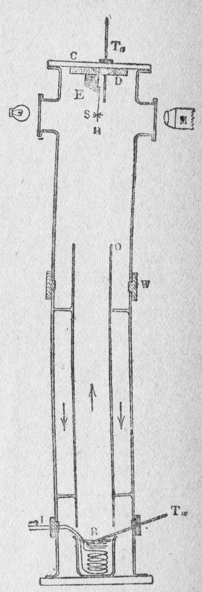
第38図
前の実験に用いた装置が不十分であるというのは、第一にあの装置では内部の空気の対流がどうなっているか全然見当がつかなかったのである。それで今度は前の装置を少し改良して第38図のようなものを作った。
これは大部分硝子製で、大小二本の硝子管を図の如く立てて、暖い水蒸気は内部の管内を上昇し、冷えた空気は二本の硝子管の間を下りるようにした。即ち空気は第38図に矢印で示したような経路の対流を起すのである。図中Ｃは銅板の蓋でその内面にはＤなるコルクまたは木の板を置いた。Ｄは結晶が直接冷たい銅板に面しないために挿入したもので、Ｄの有無によって結晶の出来る所の気温の値は著しく左右される。楔Ｅは銅または木で作り、Ｅ及びＤの物質を色々組合せることによって、を適宜加減して色々の種類の結晶を作る際の二次的要素の調整をした。即ち結晶形は主として、室温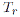と水温とで決定されるのであるが、結晶の出来る場所の周囲の熱的条件も二次的にはかなりの影響を与えるからである。
Ｗは木の
次に対流の工合を全く異にする装置を作り、装置第四とした。その原理は、電熱で暖めた硝子管内に気流を自然上昇せしめ、冷えた銅の側管内を自然下降せしめるというのである。この装置では対流をかなり強くすることが出来て、毛に附着した雪の結晶が激しく動揺する位であった。羊歯状結晶はこの装置では非常に速く生長し大形のものが出来た。
人工雪の研究の第二段としては先ず核の問題を調べる必要がある。
雪の核の本来の意味は、水蒸気の凝縮の中心となるもの、即ちイオン、空気コロイド粒子あるいは細塵などを指すものであることは、既に詳しく述べた通りであるが、便宜のためここでは、それらに水蒸気が凝縮して出来た氷の微粒子を核と呼ぶこととする。即ちここでは核と呼ぶのは雪の結晶の極初期の状態を指すのである。
先ず雪を吊すべき毛の上に今いった意味での核を作ることが問題なのであるが、それはかなりむずかしいことであって、普通に毛を上昇気流にさらすと、水蒸気は毛の全体に霜の結晶となって凝縮し、少数の雪の核だけを作る目的には
（１） 毛の乾燥度 毛は種類の如何 を問わず、十分に乾燥していることが大切であった。湿った毛を入れると、毛の全体が凍って氷の鞘 で蔽 われてしまうので、霜は全体に生ずるのであろうと思われる。
（２） 水温の上げ方 毛を装置内に入れてから、水温を上げて暖い水蒸気を毛の方へ送るのであるが、この際水温のあげ方が大切である。は十度位から徐々に上げてゆくことが大切であって、急激に上昇させると沢山の核が毛一面に出来てしまう。は零度から上昇させてもその上げ方が緩 かならば差支えなかった。
（３） 毛の種類 結晶を吊す繊維としては、兎の腹毛、絹、木綿繊維、羊毛、蜘蛛の巣などを試みた。その中で兎の毛と絹の繊維とが一番良いことがわかった。他の繊維ではとかく核が沢山付きやすくて困った。兎の腹毛を高倍率の顕微鏡下で調べたところ、第39図のように所々に瘤 のあることがわかった。
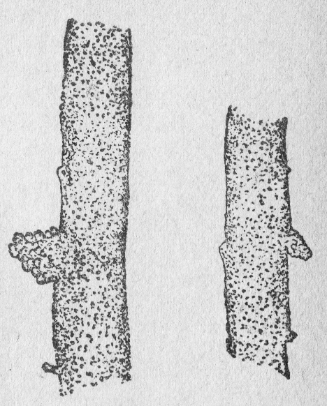第39図
低温室内で水蒸気を凝縮させて見たが、この瘤が最初に氷で蔽われるのが見られた。水蒸気が微水滴に凝縮する場合、イオンを核として凝縮するといわれているが、それは空気中に塵埃 が全くない場合で、少しでも塵埃があれば、イオンよりも塵の方を核として凝縮するのである。今イオンの問題を別にして考えるに、水滴の蒸発は表面張力の影響で飽和蒸気中でも進行する。それで微水滴の生長にはかなりの度の過飽和が必要である。その過飽和度は水滴が小さいほど大きいことが必要で、換言すれば与えられた過飽和度では、水滴が或る限界の大きさまで何かの理由で生長したものが、その先も生長することが出来、それより小さいものは蒸発してしまうのである。塵があると、これを中心として出来た水滴が多くの場合その限界の大きさを越えることが出来て益生長するのである。第39図に示した兎の腹毛の瘤に氷が附着して、小氷塊になると、その氷塊は益生長するが、他の部分には凝着しにくいので、或る点だけに雪の核が出来るものと説明される。後には絹繊維をパラフィン蒸気の上に暫くさらしてそれを用いて見たが、それも今の目的に適していた。
生長するのである。第39図に示した兎の腹毛の瘤に氷が附着して、小氷塊になると、その氷塊は益生長するが、他の部分には凝着しにくいので、或る点だけに雪の核が出来るものと説明される。後には絹繊維をパラフィン蒸気の上に暫くさらしてそれを用いて見たが、それも今の目的に適していた。（４） 毛の太さ 同種の毛では太いものよりも細いものの方が結果がよかった。細いものは核が早くついて、そして点々と離れてつきやすかった。
（５） 天井の物質の影響 第38図の装置における天井Ｄの物質をかえるとが変り、随って核の出来方に影響した。勿論Ｄの物質はその後の雪の結晶の生長にも影響した。コルク、木材、銅の三種類を比較した所では、コルクの時が与えられた、に対してが一番高く、独立した核が出来やすかった。また核の出来るまでの時間も一番短かかった。銅の時はその反対で核の付くまでに時間がかかり、木材は両者の中間の性質を示した。これは熱の伝導度によるものである。
これだけ事柄が分って来ると、毛の上に雪の核を少数だけ作るという一見甚だ無理なようなことが、難なく上述の核は雪の結晶の最初期の状態で、この状態ではその形は普通の倍率の顕微鏡ではまだ十分に識別することは出来ない。しかしこの核は見え始めるとどんどん生長して、間もなく顕微鏡下でその形と構造とがよく見える位に発達する。この状態を以下「結晶初期」の状態と呼ぶこととする。結晶初期の状態にもいろいろ雑多な種類があって、その複雑の度は雪の結晶の場合と同程度であることが分った。そのうち十二種の型を模型的に第40図に示す。その中（１）小六花、（６）鼓型、（10）コップ型、（11）角柱骸晶の四種だけは、写真を第41、42、43、44図（第10・11図版）に示すこととする。これらの結晶初期を三種類に分類して簡単な説明をすれば次の如くである。
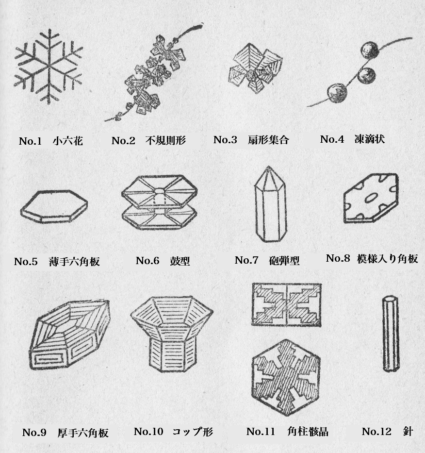
第40図
（１） 急激に生長するもの （１）小形六花、（２）不規則形、及び（４）凍滴状はこの種類に属し、これらは例えば第41図（第10図版）に示した程度まで生長するのに三十分位かかる。同一実験において、一本の毛に例えば小形六花が出来、他の毛に角板集合が出来るようなことがあり、前者は生長が速く後者は遅いというようなことがしばしばある。これは多分核の形の差によるものと思われるが、核自身の形はわからない。高倍率にして見るために装置外に出すとすぐに昇華してしまうからである。
（２） 中間的のもの （３）扇形集合のもの、（５）薄手六角板などがこれであって、生長速度は（１）の場合よりも少し遅い。
（３） 生長の遅いもの （６）鼓型、（７）砲弾型、（９）厚手六角板及び（10）コップ型、（11）角柱骸晶及び（12）針などがこの類に属し、結晶を緩かに生長させた時に、これらのものが得られる。五時間位は普通で、中には二十五時間もかかったものもある。もっともこの時間は大した意味はないので、例えば二十五時間かかって生長したという結晶の写真を、十五時間のときにとったとしても、その差は少し形が小さいという位のことしか見られないのである。
これらのうち、（８）（９）（10）及び（11）は結局同じもので、角柱の骸晶である。骸晶の模範的の形は第40図（11）に示したもので、同図上方は側面図、下方は平面図である。この結晶は上下両面及び側面から階段状の穴が入りこんでいるような形となっているので、（11）で斜線を引いてある部分が、氷の実質のある部分である。この角柱の次には以上に述べた「結晶初期」の状態がその後の雪の結晶の生長にどのような影響を及ぼすかという問題が出て来る。即ち地上へ降って来てわれわれの目にふれるいわゆる雪の結晶は、この初期の結晶の如きものから漸次生長して大きくなった結晶なのである。この結晶の初期状態がその後の結晶生長に及ぼす影響を示す好い例は立体樹枝型の雪である。
天然の雪には立体樹枝の中に立体六花型と放射型とがあることは前に述べた通りである。初めの立体六花型の雪は普通の六花型の結晶が生長してゆく途中、他の核が枝の各点に附着して、其処から立体的に余分の樹枝状の枝が伸び出たものと考えれば説明が出来るのである。ところが放射型のものは、結晶が生成初期において特殊な形をしていたために、その各点から枝が八方に伸び出たものと考えねばならない。放射型の中でも前に述べたように、中心に角柱の集合があるものはそれを初期状態と見ればよいのであるが、中にはこの角柱集合が見えぬものもある。その種のものはこの実験から第40図の（３）即ち扇形集合から発達したものであることが分った。即ち初めに扇形集合を作って置いて、それから樹枝を発達させると、ちゃんと放射型の立体樹枝になったのである。第47（第12図版）がその一例である。これらの結晶初期の形というものは、天然雪の場合では天空において出来始めた形であるから、本来は窺い知ることが出来ないものである。ところが人工雪においては、これらのことが判然と知ることが出来るのである。
このようにして人工雪が
室温は初めは零下二十度乃至三十度位で実験を行っていたのであるが、その後室温を零下四十度位まで下げて見ると、出来る結晶の形がまるで変ってしまうことが分った。それで実験を二つの群に分けて、零下二十度乃至三十度の時の結晶と、零下四十度附近の時の結晶とに分けて説明することとする。
この実験で分ったことは、前に採用した過飽和比というものは、あの時にも説明したように、装置をきめた時に、その装置での相対的の意味しか持たないものであるということがはっきりしたのである。ところで過飽和比というものは、直接に結晶の形をきめるものではなく、過飽和が結晶の生長速度をきめ、その速度が結晶の形を左右するものなのである。それで今度は結晶の生長速度を測って、それを結晶形をきめる目安とした。折角前に採用した過飽和比を捨てるのは今まで無駄をしていたように思われるかも知れないが、実際はそうではない。研究というものは、このように何度でもぐるぐる廻りをしている中に少しずつ進歩して行くもので、丁度ねじの運行のようなものなのである。
最初の室温零下二十度乃至三十度の実験では、出来た結晶の形を簡単のために、五種類に分類した。（１）羊歯状、（２）普通の樹枝状及び広幅の六花、（３）扇形及び角板、（４）不規則形及び側面結晶、（５）針状その他の五つである。これらの人工雪の例は第45〜49図（第11・12図版）の写真に示した如くで、即ち第45図（第11図版）が羊歯状の模範的なもの、ただし一方の枝はすこし短い。第46図が普通の樹枝状の雪、第47図が放射型の立体樹枝である。この立体樹枝は前述のように扇形集合の初期状態のものから作った結晶で、第20図（第７図版）の天然雪の同種のものと比較すれば、両者が全く同じものであることが分るであろう。第48図の写真は側面結晶の例で、これも同種の天然雪の結晶、即ち第25図（第８図版）と殆ど同じものである。針状結晶も人工で容易に出来るので、その一例は第49図に示す通りである。
これらの各
の結晶について分ったことを（１） 結晶の平均生長速度は
羊歯状 四・六 粍／時
普通及び広幅樹枝 一・三 〃
扇形及び角板 〇・六六〃
側面結晶及び不規則形 〇・五 〃
普通及び広幅樹枝 一・三 〃
扇形及び角板 〇・六六〃
側面結晶及び不規則形 〇・五 〃
となった。羊歯状の結晶が生長が速く、角板などが遅いことは分っていたのであるが、これでその程度がはっきりしたのである。
（２） 羊歯状及び普通樹枝状はが零下十五度乃至二十三度の範囲内で出来やすく、が零下二十三度以下の低温では、色々水蒸気の供給度を変えて見たが、どうしても出来なかった。即ち美しい六花の結晶の出来るためには気温が或る範囲内にある必要があるらしい。もっとも天然には気温零下三十度の所でも美しい六花が降ることがあるかも知れないが、冬期そのように気温が下る土地では、気温の逆転という現象があって、数粁 上空の方が地上よりかえって温度が高いことが多いのだから、この説の反証にはならない。
（３） が零下二十三度以下では、結晶は不規則形または側面結晶となりやすい。
（４） 或る特定の結晶を作る場合、水温は一定の室温についても広い範囲内に変化したが、これは装置内の対流が一定ではないためによるものと思われる。随って水温では事柄を決めることが出来ない。
（５） 結晶初期状態の影響は側面結晶の時に著しい。
以上のように書くと大変よく雪の出来る機構が分ったようであるが、実際は、結晶生成の際その形を決める外的条件は非常に複雑なのである。例えばこの実験では勝手に調節し得る条件は室温と水温とである。結晶の出来る所の気温はととそれから装置内の対流とによって決まる。その中対流は不安定なもので、顕微鏡的に見た即ち非常に小範囲内での激しい室温を零下四十度附近まで下げると、雪の結晶の形はすっかり変って来る。そして
この実験では水蒸気の供給度を調節するために絞りをつけて上昇気流を加減して見た。その結果分ったことは、気温がうんと低くて水蒸気の供給が少い時には、結晶は角柱と角板との不規則集合、即ち天然雪の「粉雪」（第８図版第26図）になることである。その一例は第50図（第12図版）に示す如くである。この写真と前の第26図の天然雪とを較べて見ればその類似がよく分るであろう。高山地方でこの種の「粉雪」の出来る条件として想像されるものは、この人工雪の実験の条件と同じものである。
この時水蒸気の供給をうんと増すと、結晶は
以上の実験の外に、気温をうんと低くして、水蒸気の温度及び供給度を極端に減らして数十時間かけてゆっくり結晶を作った場合と、普通の条件で出来た雪の結晶を放置してその昇華蒸発を調べた場合の実験とを行った。それらの結果は省略することとするが、要するにこれで人工雪の実験は一段落という所まで出来上ったのである。しかし以上に述べたような色々の結論は、もう四、五年も研究を続けたらまた変ってしまうかも知れない。またそうありたいものと願っている次第である。
このように色々苦労をして人工で雪を作って見るというのも、その目的は何かといえば、第一の目的は雪の本質を知りたいというのである。もっともこういうことも附け加えて置いてもよいだろう。
冬期の降雪中の航空は甚だ困難な問題なのである。何故かというと、上層の気象状態がちっともわかっていないからである。普通上層の気象状態を測るには小気球を飛ばせて、それを地上から観測して、その気球の動き工合から上層の気流などを調べることが多い。また上層の水蒸気の量及び気温を測るには、気球に自記寒暖計、湿度計、気圧計などをつけて飛ばしたりあるいは大形の
寺田寅彦先生の「小浅間」という文章の中に左のような一節がある。
先生は昭和十年の夏小浅間へのぼられた。丁度その時小浅間の頂上には地震研究所のＴ君が観測するために天幕をはって滞在しているのを訪問かたがた登山されたのである。
まわりに落ち散らばっている火山の噴出物にも実に色々な種類のものがある。多稜形をした外面が黒く緻密な岩肌を示して、それに深い亀裂の入った麺麭殻型 の火山弾もある。灼熱した岩片が落下して表面は急激に冷えるが内部は急には冷えない、それが徐々に冷える間は、岩質中に含まれたガス体が外部の圧力の減った結果として次第に泡沫となって遊離して来る、従って内部が次第に海綿状に粗鬆 になると同時に膨脹して外側の固結した皮殻に深い亀裂を生じたのではないかという気がする。表面の殻が冷却収縮したためというだけではどうも説明が難かしいように思われる。実際この種の火山弾の破片で内部の軽石状構造を示すものが多いようである。（中略）
その他にも色々な種類の噴出物がそれぞれにちがった経歴を秘めかくして静かに横 わっている。一つ一つが貴重なロゼッタストーンである。その表面と内部には恐らく数百頁にも印刷し切れないだけの「記録」が包蔵されている。悲しいことにはわれわれはまだ、その聖文字 を読みほごす知能が恵まれていない。
寺田先生は、小浅間にのぼられる道々にその他にも色々な種類の噴出物がそれぞれにちがった経歴を秘めかくして静かに
さて、雪は高層において、まず中心部が出来それが地表まで降って来る間、各層においてそれぞれ異る生長をして、複雑な形になって、地表へ達すると考えねばならない。それで雪の結晶形及び模様が如何なる条件で出来たかということがわかれば、結晶の顕微鏡写真を見れば、上層から地表までの大気の構造を知ることが出来るはずである。そのためには雪の結晶を人工的に作って見て、天然に見られる雪の全種類を作ることが出来れば、その実験室内の測定値から、今度は逆にその形の雪が降った時の上層の気象の状態を類推することが出来るはずである。
このように見れば雪の結晶は、天から送られた手紙であるということが出来る。そしてその中の文句は結晶の形及び模様という暗号で書かれているのである。その暗号を読みとく仕事が即ち人工雪の研究であるということも出来るのである。
［＃改ページ］
この小さい本で私は、最初に雪と人間生活、特にその災害について述べ、次に雪華研究の歴史を語り、それから私自身の雪の研究に入った動機及びその後のことを記した。そして更に進んで雪はどんなものか、雪はどうして出来るかなどという問題にも触れたのであった。それから雪の正体を的確に掴むためには、どうしてもその生成条件を知る必要があるために、人工で雪華を作り、そしてその生成の条件を知ろうとしたのである。雪の出来る条件は、私が今まで述べただけで定まるものではないと思うし、また例えば説明もいまだ十分尽したとはいえない。しかし読者は自然科学の研究というものが大体、どんなものであるかということを理解して下さればよいのである。もっともそんな大それた目的だったら、もっと偉い西洋の学者の立派な研究の経過を紹介した方がよいとは私自身も十分知っているのであるが、そのような偉い人の偉い仕事の紹介はいくらでもある。それで極めて平凡な一人の学徒の平凡な研究の話も一部の読者には興味があるかも知れないと思ったのがこの本を作った主旨である。もし料理屋の立派な御馳走を喰べ馴れている人に、茶漬のような味を味わってもらえたら望外の喜びである。
一口に「雪が降る」とか「雪は
もともとこの書の目的は、雪が出来て、地上へ達するまでのことを出来るだけ詳しく説明することにあった。随って一度地上へ積ってからの雪についてはその物理的性質について何ら触れるところがない。いうまでもなく、今のところ最も人間生活に関係の深いとされているのは、地上の雪、即ち積雪である。しかしこの問題を究めるためには、雪そのものの正体を掴まなければならない。そのためにはまず以上のようなことも第一に研究しなくてはならない問題の一つであろう。
地上に達して積雪となると、結晶の形は変って、大体において球形に近い粒子になる。その時出来る粒の大きさ、水分含有の量などは
「雪を研究する」という仕事は一人の人間が一生を費してやっても到底かたづくような問題ではない。一石ずつ築いた研究の上に立って、今後の有為な人々が、何十人か何百人かあるいは何千人かが、更にその上に真剣な努力を積み重ねることによって一歩一歩と完成に近づくというような性質の問題であろうと思われる。
［＃改ページ］
この『雪』を書いてから、既に十年の月日が過ぎた。もう全般にわたって、加筆校訂を要する時期に到っている。いつも版を重ねるごとに、それを志しながら、未だにその責を果さないで来た。今回もまたその例に洩れないことを遺憾に思っている。それでこの機会に、本書に述べた私たちの研究のその後の経過と、この研究の意味とを、簡単に附記しておく。
この書にかかれていることの中で、比較的役に立ったのは、結晶の一般分類である。雪の結晶については、「複雑
実際には、しかしこの美しくない結晶の方が、数も多く、種類もたくさんあって、学問的には、もっと重要なのである。その点は、この書に既にくわしく述べてあるとおりである。
国際的に雪の結晶を分類して、一定の分類法とその命名とが、世界各国共通に使われることは、われわれの間には、ずっと前から要望されて来たことである。それで昨年のオスローにおける国際雪氷委員会総会で、次の一九五二年の総会までに、「国際雪分類と命名」の原案を作ることが決定された。
その間相談の会を、今年の夏、カナダのオッタワで開いた。既にこの委員に任命されていた、アメリカ、カナダ、スイスの三名の学者が集り、私もその会に出席することが出来た。その結果、この書にある「一般分類」を基として、実用的な簡易化を為し、九種類に分類することに決った。それで結晶の分類は簡単にすんだ。同時に積雪の分類もしたが、この方はまだいろいろな問題が出て来るかもしれない。
人工雪の研究は、この書に述べたところは、ほんの初期の研究結果だけである。この十年の間に、主として花島政人博士の手によって、人工雪の研究は、著しい進歩をした。現在では、全種類の結晶型が、再現可能の状態で、容易に製作されるようになった。結晶形と外界の気象条件との関係という、一番困難な問題も、一応の解決を見た。
それでは、雪の結晶の人工製作という大問題も、一応片付いたかというに、まだそうとは言い切れない。というのは、本書の読者が既に知られたように、私たちは、兎の毛の一点上に、極微の氷晶を作り、その氷晶から、雪の結晶を発達させている。その点は、現在でも十年前の方法をそのまま用いている。それでわれわれは、雪の結晶の最初期の状態、いわば雪の起源については、まだ何も言うことが出来ない状態にある。
ところが、この数年来、その方面の研究が、主としてアメリカで急激に進歩した。それはＧＥの研究所で、ラングミュア博士とシェファー博士とが、この氷晶を人工的に作る研究に成功したからである。冬の空にある雨雲は、もちろん零度以下にあるが、ほとんど全部過冷却の微水滴から成っている。この過冷却の水滴群の中に、ドライアイスの粒をまくと、水滴が氷晶にかわることを発見した。また沃化銀の非常に
理論は略するが、これで氷晶の成因は一応分った。このアメリカでの近年の研究と、私たちの実験とを併せると、雪の結晶の人工製作の問題が、初めて首尾一貫して解けたことになる。もちろん、この「併せると」という言葉が
しかしこのＧＥの研究が出たので、私たちの人工雪の研究も、その性格が非常にはっきりして来たわけである。
昭和二十四年十二月十日記